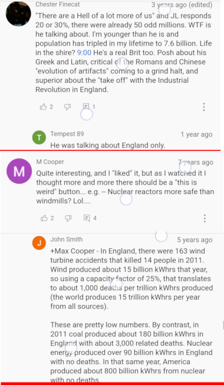
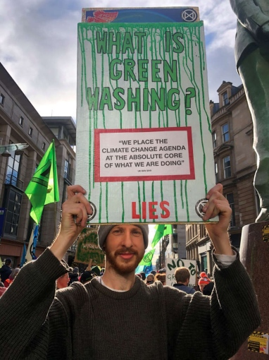
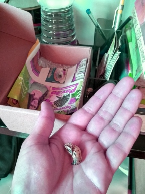
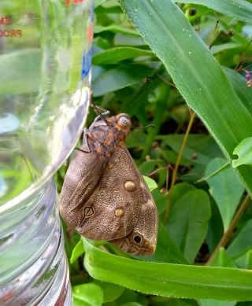
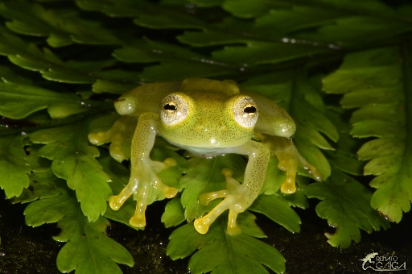
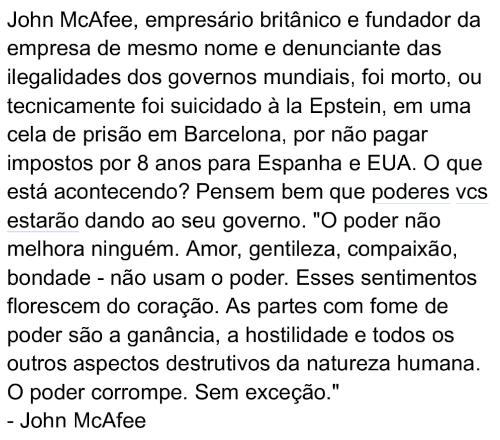
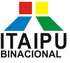

Neste blog vou coletar e manter um registro de pontos e de
referências de links importantes no decorrer dos meus estudos para
concursos públicos. Não somente isso, talvez haja posts com
assuntos fora da lei.. 😜
por mountaineerbr
#29 Robôs Escolhendo Currículos
Texto interessante sobre como é feita a seleção com ajuda de
robôs.
Importante ressaltar que os recrutadores são quem devem ajustar
o algoritmo, e eu acredito que podem se acostumar com uma
determinada configuração e não mais mudar, assim só verá candidatos
com o mesmo tipo de perfil.
Muitas empresas usam programas de computador para escolher quem
vai avançar no processo seletivo.
Eu não tenho LinkedIn mais. Antigamente eu tinha mas há uns três
anos removi meu perfil. O LinkedIn é bem perverso com seus
usuários.. Mas o artigo diz que o LinkedIn é uma rede muito
importante para recrutamentos, e portanto, talvez eu recrie meu
perfil lá ano que vem..
#28 Animais Mortos no Pantanal 2020
Há uma reportagem que saiu na BBC dizendo que 17 milhões de
animais foram mortos nos incêndios de 2020 "Brazil wildfires killed an estimated 17 million
animals" no pantanal.
Lendo o artigo, a primeira coisa que observei foi que
não foi realizado transecções em regiões do
pantanal que não foram afetadas por incêndios, ou seja, não há um
branco ou a taxa de fundo de geração e carcaças no pantanal para
nenhum dos grupos de animais apresentados! Então todos os
resultados são extremamente suspeitos devido a vieses de
interpretação.
Procurando na literatura, não foi fácil achar artigos com taxas
de fundo de carcaças (carrion) nas florestas. Isso se deve ao fato da
dificuldade da produção de pesquisas sobre o assunto já que as
carcaças são consumidas rapidamente (Fellers, 1982) por uma
teia ecossistêmica que se forma durante a decomposição, também com
a participação do necrobioma (vermes, pupas, bactérias, formigas e
moscas) e de carniceiros (scavengers)
(Benbow,
2013), formando hotspots na área local. O primeiro artigo e de
revisão bibliográfica e podemos seguir referências cruzadas para
investigar mais profundamente, se desejarmos,
"Towards Quantifying Carrion Biomass in Ecosystems"
(Barton, 2019), e também a outra revisão "Carrion
Availability in Space and Time" (Moleón, 2019).
Precisaríamos de taxas de fundo de geração de carcaças dos
grupos animais apresentados em Tomas (2021) no bioma
pantanal, pois essas taxas variam muito de bioma para bioma e
dependem da influência ou uso pelo ser humano das espécies
envolvidas (por exemplo, ver as diferentes taxas de carcaça de
ungulados por região e por trabalho acadêmico na tabela 1 de
Moleón, 2019).
No artigo de Tomas (2021), estimou-se a perda de 457704
ungulados em 39030 Km2, ou seja
aproximadamente 12 ungulados por Km2. Acho muito difícil
fazer comparações pois na metodologia de Tomas (2021) é avisado da
provável impossibilidade de comparações com outros estudos. Outro
fato estranho, por exemplo, é estimarem o mesmo número de 457704
para mortes de primatas, ou seja, não levam em consideração
variáveis como biomassa (e tamanho) das carcaças.
Mas tentaremos fazer uma comparação. Dos outros dois artigos,
extraí uma taxa de geração de carcaças de ungulados que varia entre
1-3 ungulado-equivalente/Km2. Veja que é uma comparação
muito preliminar, pois peguei essas taxas por cima nos artigos
mencionados..
Por exemplo, no artigo de Moleón (2019), peguei o primeiro valor
de 696 Kg/km2 de ungulado para uma área rural de
Zimbabué, predominantemente bioma de savana, ou seja, bem longe de
um valor apropriado para o pantanal em que há, ainda por cima,
grandes rebanhos bovinos destinados a uso humano. De qualquer
forma, isso não nos impede de estimar que 696Kg equivale entre 1-2
carcaças de bois por Km2. Já do artigo de Barton
(2019), extraímos de copepods and ungulates were at the lower
end of the range (between 10 and 1000 Kg/Km2), despite
being vastly different in body size o valor aproximado de
1.6-2.7 ungulado-equivalente por Km2 como taxa de
carcaça basal.
Assim, a taxa de fundo de carcaça de ungulado no pantanal, por
comparação, poderia ser calculada em torno de
39030 a 117090 carcaças por 39030
Km2, ou seja, a taxa de fundo pode contabilizar
aproximadamente entre 8% e 25% das 457704 carcaças
estimadas em Tomas (2021)!
Esse mesmo trem de raciocínio pode ser aplicado para analisar as
taxas dos outros grupos apresentados na pesquisa de Tomas (2021),
mas encerro minha pesquisa desse tema por hora.
Todos esses processos de decomposição estão em equilíbrio
dinâmico com o ambiente, e conquanto a influência humana na
degradação de florestas altera a função do meio ambiente local, a
funcionalidade do ecossistema permanece inalterada no nível de
paisagem pois funções desempenhadas por espécies específicas podem
ser redundantes e assim funcionam como um tampão (Sugiura,
2013).
Conclui-se que a reportagem da BBC é exagerada. Os próprios
autores de Tomas (2021) admitem ser impossível comparar seus
resultados com os de quaisquer outro estudo por causa de sua
metodologia única. Então eu pergunto, qual o valor real dessa
pesquisa?
#27 Ocupado com a Diversidade
Estive sem postar pois nas últimas três semanas e pouco (quase
quatro semanas!) estive focado em pesquisas sobre
biodiversidade.
Um jornalista me pediu um texto pois se interessou quando falei
que a biodiversidade do planeta não está diminuindo. Ele
ficou muito intrigado.
E eu também. A única referência que eu tinha era do Patrick
Moore mostrando gráficos com aumentos, alguns exponenciais, de
famílias, gêneros e espécies no decorrer das eras geológicas e
afirmando que não conhece nenhuma família biológica que tenha sido
extinta recentemente (apesar que existem extinções de espécies em
tempos modernos).
Eu confio no Patrick e sei que os dados paleobiológicos são
incontestáveis, então só restava ir desenrolar o fio da meada.
Não foi muito fácil no começo, mas fui estudando de uma forma
global, regional, até chegar no nível local e, especificamente, no
Brasil.
O resultado é um artigo de revisão científica bibliográfica com
alguns dados primários que calculei no tocante a análises das
listas vermelhas internacionais e brasileiras, além de sintetizar
algumas conclusões importantes que vão contra a visão corrente da
maioria dos conservacionistas.
RESUMO Desde o começo da colonização europeia, espécies exóticas
têm causado problemas e preocupações sobre perda de biodiversidade
estão em jogo. Revisamos a literatura científica para melhor
entender qual o papel que a biodiversidade executa nas escalas
global, regional e local, e se mudanças na composição de
biodiversidade afetam a funcionalidade do ecossistema. Também
analisamos várias Listas Vermelhas e relatórios de entidades
mundiais e brasileiras. Espécies de interesse podem se recuperar se
predação ativa for barrada e esforços de conservação empreendidos.
Concluímos que relatórios baseados nas Listas Vermelhas são
exagerados e que não há ameaça iminente de perda de biodiversidade
em vista.
Essa revisão bibliográfica me ajudou a entender melhor sobre
teoria de ilhas e com certeza me atualizou com o tema ecologia, do
qual tema estava começando estudar leis brasileiras.
Através de
uma palestra do Patrick Moore, que aliás li comentário que era
uma de suas melhores palestras, em que o Patrick diz que o
James Lovelock recuperou sua dignidade científica, vamos dizer
assim, em tempos recentes depois de tanto investimento. Na
realidade, James Lovelock era um ídolo de Margareth Tatcher, com
quem teve contato e influenciou muito. Não me lembro agora
claramente, mas me lembro de ter lido já algumas vezes nessas
pesquisas profundas sobre clima que faço que ela é uma chave muito
importante nessa trama toda, inclusive de controle global, etc.
Recomendo assistirem um vídeo do James
Lovelock sobre o seu livro A Rough Ride to the
Future. James é um cientista independente e inventor,
fatos admiráveis..
Resumidamente, o vídeo é muito estranho. Muito estranho, pelo
menos para mim que sempre associou o discurso com as ideias da
teoria de Gaia com aquecimento global e essas bobagens.. Talvez
isso não seja ter um terrível coração, mas sim por que, de acordo
com Patrick:
Lovelock was for many years of the believe that humans are the one
and only rogue species on Gaia, destined to cause catastrophic
global warming. [...]
But James Lovelock has seen the light and recanted and realised
that humans may actually be part of Gaia's plan. [..]
It takes great courage for a public figure to change their mind
after investing so much of their reputation on the opposite
opinion. Rather than seeing humans as the enemies of Gaia, Lovelock
sees that we may be working with Gaia to stave off another ice
age.
O vídeo do James Lovelock é muito legal e há muitas maneiras de
interpretar o que ele diz, tanto os pombos aquecimentistas
quanto as pessoas racionais. Mas por exemplo, o James Lovelock é
contra o uso indiscriminado de energias renováveis. Ele
diz que energia nuclear é muito mais segura do que mesmo energia
eólica!
Diz ainda que, em suas observações do comportamento de insetos,
percebeu que a melhor maneira que descobriram para viver em
comunidade foi em ninhos/tocas/formigueiros, verdadeiras cidades.
Aliás, algumas espécies de cupins até constroem uma torre para
conseguirem controlar a temperatura do cupinzeiro, um verdadeiro ar
condicionado.
Então James Lovelock diz que é melhor tentarmos parar de tentar
controlar o clima e morarmos nas cidades, pois é muito mais barato
controlarmos a temperatura das cidades para que as pessoas vivam
bem, assim como em Singapura.
Perguntado sobre o que mais odiaria, James Lovelock respondeu
que detesta aqueles que tentam fazer as coisas mais
difíceis...

Fig 1. Alguns comentários pertinentes com relação a
alguns pontos que podem ter ficado um pouco confusos sobre o que o
James Lovelock falou, para quem for assistir à entrevista
dele.
#25 Currículos no Último Ano, Richard
Jakubaszko e Clima
Trabalho voluntário contra Covid19
No ano passado, nesta mesma época, comecei a enviar alguns
e-mail para tentar arranjar um trabalho voluntário contra a
Covid19. Enviei repetidos e-mails para várias divisões da saúde
aqui do Paraná e de São Paulo, também.
Obtive somente algumas respostas de obrigado. Uma em destaque,
foi a resposta do
João Doria para mim (através da secretária dele, é claro).
Networking do clima
Comecei a enviar e-mail para pessoas que admiro ou admirava
muito. Personalidades, cientistas e intelectuais da ciência do
clima e agronegócio do Brasil que conheci através da televisão,
YouTube, entrevistas, palestras, etc.
Alguns deles dizem nas palestras Mandem-me e-mails pois
responderei todos!. Esses são os que não
respondem. Já tentei até mesmo dar uma cobrada, já que
meus e-mails começam geralmente com bastantes elogios..
Esse tipo de e-mail é pretendido para construir uma rede
particular de comunicação, já que eu quase não conheço ninguém das
áreas de interesse meu, ideológico ou profissional, no mundo
real. Para que pelo menos vejam meu nome uma vez, termino
mandando meu currículo resumido e pedindo que, achando adequado,
possam disponibilizar meu currículo para alguém que possa ser
útil.
Será que eles ignoram todos os elogios, toda a apresentação e
discussão das minhas ideias e só focam nos últimos parágrafos que
rapidamente menciono sobre o currículo e trabalho? Pois só não digo
que estou desempregado, sou bem delicado..
Me admira se isso realmente for, pois para muitos quem admiro
ofereço, ainda o quanto antes nos e-mail, meu trabalho voluntário e
grátis para qualquer coisa que envolva a causa climática!
Meu pai falou que só respondem quem tem secretária. Acho que não
é só isso, acredito que muitos não tem paciência com redação ou
intimidade com e-mails, apesar de usarem para suas razões
peculiares.
Também, será que se acham tão importantes assim? Me preocupa
ainda mais a provável incapacidade de pensarem por si e julgarem
uma ideia por si mesma, um e-mail por si mesmo, ao invés de
escolherem responder somente àqueles do nível ou prática deles?
🐜🐜🐜
A prática de não responder me intriga muito. Meu
psicólogo insistia muito que o silêncio é uma resposta e sinal de
conhecimento superior. A verdade é que pode ser ou
pode não ser. Ao contrário, o silêncio está muito mais
relacionado à morte do que a vida, e o que é morto não parece
ser-me muito útil.
Na verdade, o silêncio pode ser falta de coragem, insegurança,
desconfiança, vaidade, falta de palavras por emoção forte,
ressentimento, inveja...
Só poderemos racionalizar o silêncio dos outros, o que,
aviso, é um péssimo negócio sempre!
Jornalista Richard Jakubaszko
Um que me respondeu recentemente foi o Richard. Para quem
não o conhece, ele está inserido na área do agronegócio brasileiro,
e claro, combatente do mitos climáticos que tenta esclarecer.
O livro CO2 e mudanças climáticas: estão nos
enganando? foi escrito por ele com a colaboração de
diversos outros autores, incluindo físicos e agrônomos, como o
grande Dr. Luiz Carlos Molion (quem não me respondeu
nem sequer agradeceu meus elogios ao seu excelente
trabalho em um e-mail que enviei).
Desde que vi algumas palestras do Richard no YouTube, me
interessei pelo jeito que ele explicava e descobri que, na verdade,
o livro que ele escreveu deveria conter as minúcias de tudo o que
ele fala.. Assim, quinta-feira passada, semana da Black-Friday, decidi adquirir o livro e a história a
seguir é sobre nossos conseguintes encontros.
Telefonema
No site do Richard, há meios
para contactá-lo, incluindo e-mail e telefone.
Quinta-feira, dia 18/Nov, resolvi ligar para o Richard do meu
celular. Não sabia se iria atender ele mesmo ou uma eventual
secretária de seu escritório/editora, mas não iria ficar espantado
em nenhum dos dois casos.
Para minha surpresa, a voz que ouvi responder foi a mesma que
estava acostumado por ter assistido várias de suas palestras no
YouTube.
Disse meu nome, mas logo o Richard perguntou-me se não era um
esquema/brincadeira que o governador ou sei lá quem tinha
armado para tirar com ele? Nesse ponto, então percebi que minha
apresentação tinha sido insuficiente e falei meu nome completo
(coisa que ele pareceu apreciar) e na sequência que era biólogo,
rasguei-lhe elogios e falei que gostaria de adquirir seu livro, o
que acabou por acalmar suas dúvidas maiores contra mim. Mas ainda
percebi que em momentos posteriores da conversa que ele não deve
ter tido muitas boas experiências com naturalistas e
biodesagradáveis pois alfineta-os de vez em quando
possível. Eu não o culpo!
Nesse primeiro momento, pude notar a seriedade profissional do
Richard e sua sagacidade. Realmente, deve ter tido problemas
anteriores que o deixam alerta para rejeitar possíveis
importunadores ecochatos.
O que se seguiu foi legal e impressionante: Richard começou uma
exposição dos assuntos do livro. Conforme ele ia me guiando e
mostrando a sua casa, que são onde os pensamentos do livro residem,
cada qual em um cômodo, cada lugar com sua questão, o que era o
ático e o que era o sótão, as janelas, enfim..
É uma viagem, mas não consegui ficar somente prestando atenção e
em alguns momentos fiz comentários e ele construiu sobre minhas
questões. Por exemplo, um fato importante que ele adicionou à
conversa é de que, nos Estados Unidos, a população é bem
distribuída no território e que a maioria das cidades tem poucos
(milhares) de habitantes comparando-se com Brasil.
Eu fiquei maravilhado com a disposição física, mental e social
do Richard! Mas minha surpresa não deveria ser muito grande já que
ele, jornalista sério, entende e gosta muito de comunicação. Em
determinado momento, quando ele me dizia que acha que o problema no
planeta Terra é a população de humanos muito grande, ponto qual
discordo completamente, a bateria do telefone dele acabou. Como ele
havia avisado que isso poderia ocorrer, depois de alguns segundos
desliguei o telefone e comecei a preparar um e-mail para mandar-lhe
os dados de entrega do livro quando, talvez uma meia hora depois, o
Richard me liga, de um outro número de telefone, porém também de
São Paulo, e continuamos a maravilhosa viagem, ou a explanação dos
assuntos do livro..
Então não posso deixar de recomendar para que todos adquiram o
livro do Richard, não é caro e tem promoção nas Black-Fridays. Além do que conversar com o Richard é
uma experiência muito agradável. Ele tem didática e a paciência,
tenho certeza de que irão gostar de bater um papo com ele!
E-mail
Richard respondeu meu e-mail dizendo que havia lido meu
longo e-mail e que iria responder (ou comentar?) a
maioria das questões.
Tenho dois pensamentos. Primeiro, disponibilizo aqui o longo e-mail para que o caro
leitor possa verificar mas acredito que tenha sido demais
na primeira tacada/conversa, e o Richard pode ter ficado um pouco
assustado..
Sua segunda resposta foi bem curta e é reproduzida abaixo. Não
sei se haverá mais e-mails do Richard por enquanto, mas depois que
eu ler o livro vou tentar escrever-lhe mais uma vez. Temo que será
outro longo e-mail..
Jamil, seus 2 exemplares, autografados, estão a caminho,
registrados sob nº [XXX]. Previsão de entrega é 2/12, mas
geralmente chega antes. Vc pode ficar sabendo o dia da entrega
algumas horas antes, eles dizem "saiu para entrega...",
me confirme quando chegar. Começando a responder:
1 - Apesar de não emitirem poluentes, são muito caras para
construir e, sinceramente, e tecnologia nuclear brasileira não está
no nível de outros países que tem pelo menos reatores nucleares
experimentais e usam energia atômica há décadas. Temo que um
bêbado, como você mesmo bem colocou, brasileiro faça um grande
estrago. Ou seja, não sou a favor de uso generalizado, Apesar de
não emitirem poluentes, são muito caras para construir e,
sinceramente, e tecnologia nuclear brasileira não está no nível de
outros países que tem pelo menos reatores nucleares experimentais e
usam energia atômica há décadas.
R - Quem usou a expressão bêbado de vodka foi a mídia europeia,
eu não inventei nada, e parece ser verdade, especialmente pq a BBC
repercutiu isso na época, anos 1984. A verdade é que Chernobyl
continua deserta, e deve continuar assim por sabe-se lá quantos
séculos. No norte da Rússia há uma região que desde 1920
descobriu-se que a radioatividade era muito alta, e especula-se
desde então que tenha sido a queda de alguma nave alienígena. Nos
anos 2010 a radioatividade continuava a mesma. Em meu blog tenho um
artigo que mostra os efeitos genéticos que não se conhecia da
contaminação e transmissão genética. O post tem fotos horrorosas.
Só acredito na energia nuclear se ela for a frio, e sem
radioatividade, quando for viável...
abs Richard
As respostas dos e-mails seguintes em que o Richard faz várias
colocações a respeiot dos pontos que eu citei no meu e-mail inicial
podem ser lidas aqui.
Livro
Ainda não recebi o livro mas já foram postados. Depois que
recebê-lo, ler e emprestar (pro meu pai e para minha mãe, como eu
disse que faria para o próprio Richard por telefone), então poderei
comentar um pouco do livro aqui no blog. Provavelmente em uma outra
postagem...
Atualização: os livros chegaram dentro do prazo e eu estou dando
uma lida, mas não vorazmente por que estou trabalhando em um texto
sobre biodiversidade que está me consumindo bastante tempo... Mas o
livro atendeu bem às minhas expectativas, tem partes bastante
técnicas e partes de mais fácil leitura...
Estritamente a trabalho
Bom, além dos e-mails oferecendo trabalhos voluntários contra
Covid19, e-mails com elogios e pondo meu nome para ajudá-los da
forma que me fosse possível, incluindo para grupos internacionais,
foram também muitos e-mails ou entregas de currículo para empresas
estritamente a trabalho.
Não foram poucos, mas em retrospectiva, poderia ter sido mais.
Apesar que os demais e-mails descritos nesse post não foram
enviados estritamente para buscar emprego, mas sim para fazer novas
conexões, de forma alguma deixei de incluir meu currículo e dar uma
dica que meus serviços profissionais também estariam
disponíveis.
Ao total, uma empresa de melhoramentos genéticos me contratou no
começo do ano, mas para um trabalho temporário, e que eu
infelizmente não estava preparado fisicamente e descrito em outros
posts (aqui,
aqui e
aqui).
Gostei de trabalhar na TMG, mesmo que tenha sido uma experiência
muito curta e que, infelizmente, não tenha conseguido completar.
Foi um fruto do esforço em distribuir currículos. Além de adquirir
um pouco de experiência na lida do campo que eles fazem, eu estou
bem melhor preparado para enfrentar situação similar quando e se
algum dia me envolver nessa área de novo.
Nas últimas semanas, entreguei e/ou enviei por e-mail currículos
para todas as escolas privadas da pequena cidade onde moro
(umas 12 escolas). Vamos ver se me contratam mesmo que for para
substituição de professores ou para reforço no contra-turno dos
alunos. Agora é uma boa época de entregar currículos e há a chance
de contratarem para o começo do ano que vem, depois que as
coordenações fizerem suas programações no final deste ano.
Ao total, foram mais de 50 entregas de currículos pessoalmente,
cartas e e-mails no último ano. Não é pouca coisa mas revendo
minhas cartas, percebi que houve sete meses de hiato, depois que
trabalhei na empresa de melhoramentos, que não agi muito nesse
sentido.
Ano que vem, ficarei atento a abertura de editais de PSS para
ministrar aulas em escolas públicas e também, é claro, em concursos
públicos. Para tanto, confesso que preciso focar ainda mais nos
estudos direcionados a estas metas.
Até o próximo post!
PS: quem quiser um scrape de todos os posts em texto plano
(13M), aqui está uma
cópia.
#24 Conferência do Blá Blá Blá
Tudo o que a gente precisa saber sobre o que os grandes
delegados estão falando na COP26 foi resumido pela Greta:
30 years of blah blah blah.. There is no Planeta Blah. Blah, blah,
blah, blah, blah, blah. [...] Net zero, blah, blah blah. Climate
neutral, blah, blah, blah.
This is all we hear from so-called leaders -- words, words that
sound great but so far, has led to no action or hopes and dreams.
Empty words and promises.
No more exploitation of people and nature of the planet. No more
exploitation. You Can Shove Your Climate Crisis Up Your Arse. No
more whatever the fuck you're doing inside there.
--Greta Thunberg (Ref 1,
Ref 2), around 28th Sept 2021
Até o antigo governador da Califórnia, Schwarzenegger, admitiu
na cúpula climática das Nações Unidas:
What
does a promise and a pledge mean in the end?
Nothing. Over and over, year after year, they make these pledges
and they come out to declare victory, but then nothing is getting
done.
Desta vez, parece que a Greta Thunberg, que completará 19 anos
em Janeiro 2022 e finalmente parece estar pensando por sí mesma,
falou uma coisa verdadeira, diga-se que a COP26 é uma grande
bobagem, uma farsa.
Toda conferência climática eles dizem que é a última
chance para salvar a humanidade. galera, quantas última
chances podem existir?
CFACT - Climate Reality Forum
Hospedando o fórum do CFACT em Glasgow
(Escócia), o canal do Heartland Institute está
transmitindo vários painéis incríveis.
Tem participação de um pessoal legal como o James Taylor, Marc
Marano, Lord Monckton, Naomi Seibt e mais.
Estou acompanhando mais essas rodadas de palestras e mesas
redondas de discussão sobre a ciência climática
verdadeira.
Recomendo que assistam também, se tiverem tempo. Todas
as palestras são em inglês. Se necessário, é possível ativar
legendas automáticas em Inglês, e possivelmente tradução automática
para o Português, nas configurações do tocador do YouTube.
Figura 1. Cartaz de integrante do XR sobre greenwashing, veja notícia do MSN/Yahoo News!
#23 Crisálida e Cogumelos
Minha crisálida
Acho que ainda não havia comentado aqui, mas dia 15 de Outubro
encontrei uma Brassolissophorae (lagarta
das palmeiras) se fixando no chão ao lado da minha
cadeira de praia que deixo na área da frente da minha casa.
A localização que ela escolheu para se tornar um casulo não era
nada favorável. Estava frio e no dia seguinte iria chover, e bem
onde ela estava iria se tornar uma poça d'água!
Como ela havia somente desenvolvido fios de seda para fixação
posterior (na bunda), tentei cutucá-la algumas vezes para tentar
reverter o processo de encasulamento da pupa temporariamente e ver
se ela, sentindo-se em perigo com minhas cutucadas, não iria dar
mais uma volta e achar um local melhor. Nos últimos anos, descobri
que elas podem interromper o processo e se relocarem, se preciso, e
consegui relocar dessa forma pelo menos duas lagartas que iriam
fazer o casulo em local impróprio aqui em casa.
Porém, essa em questão já estava em processo muito avançado.
Depois que fumei um cigarro e vi uns videos no celular, ela havia
se transformado em pupa do meu lado! Processo muito rápido em que
ela se despe da pele e cabeça antigas e começa a formar um casulo
muito macio e verde claro.
Ou por eu ter cutucado ela ou por ela estar em um local
inapropriado, depois que ela se tornou crisálida, os fios de seda
de fixação que estavam presos à lajota do chão se romperam e ela
ficou livre!
Pesquisando na internet, vi que algumas pessoas que amam as
borboletas e criam-nas, fazem o procedimento de relocação de
crisálidas que se fixaram em lugares ruins, com muito cuidado
obviamente.
Então, eu não precisava desgrudá-la pois assim ela já estava.
Bastou eu montar uma caminha com jornal dentro de uma caixinha de
papelão e coletá-la. Atenção que o procedimento de desafixação e
coleta pode resultar em uma tragédia com a crisálida. Uma agulha
pode ser utilizada para desfazer os fios de seda que a prendem nas
estruturas, claro que com muitíssimo cuidado para não machucá-la e
nem danificá-la. Se pegar a crisálida na mão para relocá-la, fique
atento ao vento pois ele poderá soprá-la ao chão!
Nunca tinha criado uma crisálida. Foi muito interessante, ela
foi mudando de cor nos dias seguintes e ficou mais escura e depois
bastante marrom. Desde a semana passada, observei que algumas
características morfológicas exteriores também mudaram e incharam.
Imagino que eram as estruturas do inseto se desenvolvendo.
Deixei ela na minha estante de livros, e fiquei aguardando
ansiosamente para ela sair da crisálida.
Caminhando (não) encontrei cogumelos azuis
Figura 1. Tirei esta foto do campo onde fui hoje. Às
minhas costas se encontra o pasto com esterco de gado (não visível
nesta imagem).
Desde que arquivei meu outro blog no começo do ano, tenho tido
vontade de procurar os cogumelos azuis depois de muitos anos..
Então, semana passada, como estou em uma nova cidade, abri o
Google Earth e comecei a procurar pastos de vacas perto da região
onde moro. Achei alguns alvos.
Ontem choveu um pouco e então hoje bem cedinho resolvi ir
explorar uma região com alguns pastos.
Primeiro, devo informar que não é uma regra ter que
esperar chover e depois fazer sol para procurar cogumelos. Claro
que as chances podem aumentar, mas pela minha experiência de caça
de cogumelos, se o pasto for ativo, poderá encontrar cogumelos a
qualquer época do ano, com ou sem chuva ou sol. Essa história de
esperar chover três dias e depois três dias de sol é só para tentar
achar uma grande quantidade de cogumelos.
No meu caso, deixo a sorte me levar. Quando encontro um já fico
bem feliz. Verdade seja dita, foram poucas as vezes que eu achei
uma quantidade grande de cogumelos. Geralmente, acho poucos e
pequenos. De vez em quando, acho uma quantidade suficiente para uma
dose. Dificilmente acho colônias com múltiplos e grandes cogumelos,
que daria para mais de uma pessoa.
Mas a caça e a procura não podem se resumir em encontrar ou não
as pequenas crianças de D'eus.
Me fez muito bem acordar bem cedo e sair para caçá-los hoje.
Achei uns três pastos com vacas e um com cavalos (de vez em quando
nasce em esterco de cavalo, também, depende da cepa)! Fui de carro
desta vez para poder percorrer uma área boa e me familiarizar com
ela. Rodei uns 10 KM nos arredores da cidade.
Entrei em uma propriedade privada sem querer querendo,
estacionei o carro e fui falar com um senhor que estava trabalhando
com a terra. Achei melhor já me apresentar e dizer o que eu estava
fazendo para evitar que fiquem assustados se me virem andando pelos
pastos algum dia.
O senhor foi bem legal, liberou que eu andasse na sua
propriedade. Então, na volta, decidi parar em um pasto da
propriedade dele e dar uma olhada. Muito esterco mas nenhum corpo
de frutificação (basidiocarpo). Depois, parei para verificar outros
dois pastos. Somente encontrei um pequeno cogumelo
não-psicotrópico, mas verifiquei algumas bostas e pude verificar
que há hifas crescendo.
Então há algumas possibilidades aqui: os pastos daquela região
não estão contaminados ou não estão ativos no momento ou as
condições climáticas não foram as mais favoráveis para geração de
cogus..
Não tem problema, foi ótimo caminhar na terra e na grama hoje
cedo, ver a paisagem bucólica e descobrir novos lugares (inclusive
para fazer minhas caminhadas ou andar de bike). Voltei para casa
ouvindo Cogumelos Azuis
do Ventania.
Crisálida abre

Figura 2. A crisálida eclodiu e deixou somente o
exoesqueleto..
Chegando em casa, fui olhar minha queria crisálida pois, como
disse, estava com características de maturação da metamorfose e sua
eclosão estava iminente..
Pois bem, depois de 18 dias, ela eclodiu e só deixou para trás o
exoesqueleto da crisálida. Ainda estou procurando a borboleta aqui
no meu escritório em casa.. Quando cheguei, minha gatinha estava
deitada na estante, perto da crisálida. Não sei se a gata comeu a
borboleta assim que ela eclodiu, ou se a borboleta ainda está por
aqui escondida, fortalecendo as assas.. Pena que não vi ela depois
de acompanhar por tanto tempo seu desenvolvimento!
Por via das dúvidas, vou tentar deixar a janela aberta hoje para
ela poder sair..
**PS:** Econtrei a borboleta ontem a borboleta no chão do meu
escritório de noite. guardei ela e hoje coloquei-a em debaixo de
uma árvore de primavera no quintal..

Figura 3. Não consegui uma foto mais bonita dela, com
as asas abrindo, mas aqui a prova do sucesso da
empreitada!
#22 Biólogo Henrique Entrevista Renato
Gaiga
Hoje um post rápido. Descobri o canal do Biólogo Henrique há
vários anos, na época que eu tinha meu canal ainda, muito antes do
Rei das Serpentes ter dado uma força para o canal do Henrique
crescer (e como cresceu!).
Não concordo muito com as opiniões políticas do Henrique. E
acredito que que ele é um desses biólogos que só falam as mesmas
coisas que todo mundo espera ouvir, sem ideias originais ou
diferentes. Nos desculpe, Henrique, mas essa foi também a opinião
do filósofo Paulo
Ghiraldelli em um de seus vídeos não tão recentes quando falou
de você. Além do que, é um alarmista do aquecimento global. Apesar
disso, ele é um cara boa-praça e uma coisa que admiro nele é que,
pelo menos, tenta conversar com quem tem opiniões
diferentes, ou seja, é um cara bem paciente e um tanto civil.
Não tenho o seguido muito, mas ele tem feito uma série muito boa
de entrevistas com biólogos que estou assistindo um pouco.
Até agora achei a entrevista com o
Renato Gaiga uma das mais legais e recomendo.

Figura 1. Vitreoranaeurygnathafotografado
por Renato Gaiga em suas coletas de monitoramento e consultoria
ambiental.
O Renato Gaiga parece ser um bom biólogo, eu acabei encontrando
alguns pontos em comum (mas talvez não tantos assim). Como ele tem
a mesma faixa etária que eu, é impossível evitar comparações de
maturidade em diversos aspectos. Acredito que sou mais maduro que
ele em algumas facetas, mas admito que provavelmente não tenho
todas as qualidades que ele tem para fazer o mesmo trabalho. Então
fica um tipo de admiração dele, enquanto eu fico me sentindo um
b****.
Mas se for para comparar assim, o Lula com a idade do meu pai já
era Presidente do Brasil e a Dilma com a idade da minha mãe
também.. Não estou falando isso para tentar menosprezar meus
queridos pais (ranhetas), mas são um tipo de espelho
importante para mim.. A comparação com Lula e Dilma foi infeliz,
nesse caso prefiro mais que eles continuem sendo honestos ao invés
de ganharem Poder e se corromperem, mas acredito que deu para
entender a comparação que tentei fazer com bom humor..
Se formos falar de sucesso, bem, não estou muito animado para
filosofar a esse respeito profundamente hoje, mas acredito que
Sucesso não tem muito a ver com dinheiro. Sei que é uma
opinião impopular mas vamos deixar isso por aqui e em um outro
post poderei extender melhor minha percepção
sobre esse assunto que se esgueira atrás das brumas e fora do
alcance da minha mão..
#21 Analista do ICMBio e Vini do Papo de
Biólogo
Achei alguns vídeos legais sobre biologia no YouTube. O YouTube
pode ser uma via de informação, mas eu admito estar usando ele
muito ainda..
A primeira referência é um relato de dois biólogos que trabalham
no ICMBio mas decidiram voltar à academia para se atualizarem com o
doutoramento.
Navegando pelo YouTube encontrei
Achei que existem perspectivas muito interessantes nessa
entrevista feito pelo Projeto
Bio-lives Vida. Mas para quem já me segue, sabe que eu sou a
favor de melhorar a qualidade de vida dos garimpeiros. Eu mesmo
seguia muitos canais de garimpeiros Adriano
e o da
Andrea. Nenhum garimpeiro quer prejudicar o meio ambiente.
Salvo as exceções, quando conseguem tentam fazer o garimpo
dentro da lei, mas há vários níveis de garimpo e poucos são os que
controlam a grande maioria do garimpo legal.
Infelizmente, muita burocracia e falta de recursos impossibilita
os pequenos garimpeiros de preencherem todos os requerimentos da
lei. Quando muito, conseguem comprar ou alugar máquinas para montar
uma pequena ou média operação de mineração, mas muitas vezes os
agentes de proteção ambiental acabam queimando todos os
equipamentos dos pequenos garimpeiros, e isso eu acho errado.
São pessoas que nasceram em terras de tesouro e tem muito a
perder se não puderem explorar um pouco para seu sustento e
conforto. Fazem parte do meio ambiente, também!
Notei que os entrevistados falam muito de colaboração com outros
pesquisadores da área deles, porém achei muito estranho que
não conversem tanto ou mais com os garimpeiros e
moradores das regiões onde há minas e reservas minerais.
Não esqueçamos que cada celular, cada computador, cada placa
solar requer muitos minerais, alguns raros. Ninguém é isento de
responsabilidade, se for essa a questão.
O segundo canal achei por acaso e é um making
of do famoso canal do Papo de Biólogo, do
Vini.
Não companho muito o Vini, mas parece que ele estava fazendo
algum sucesso e aparecendo na TV há uns seis, sete anos atrás.
Depois vi que ele estava organizando excursões para alguns dos
biomas que ele apresenta no seu canal, enfim, faturando um
pouco. Mas agora, o canal dele não parece estar bombando muito
e eu o achei meio perdido no último vídeo... Mas me identifiquei um
bocado nesse aspecto! LOL.
Apesar que os poucos vídeos do canal
do Andy são bem divertidos, deu para perceber que eles festavam
demais e acordavam muito tarde no dia seguinte para
trabalhar nas suas melhores disposições.. Eu fiquei só imaginando a
rebordose do caras, mas sendo jovens aguentaram o
tranco.
Como o Andy não postou mais, imagino que essa parceria deles
deve ter rendido uma grana para todos eles, mas não sei se
foi realizada novamente. Também não quero julgar muito pois sou um
fã meio desleixado, não vou atrás de maiores informações
então vamos deixar assim. A aventura que o Andy mostrou com a
galera do Papo de Biólogo é muito legal, vale a pena ver!
Já o terceiro vídeo é do Rodrigo Hidalgo entrevistando o Vini. A
entrevista é legal, mas chamo atenção aos
vídeos do Rodrigo em geral, parece ser um biólogo muito
interessante de seguir!
Currículos, gata e sítio antigo
Reformatei e reescrevi minha carta de apresentação em português
e em inglês, atualizei os meus currículos nas versões de ambas as
línguas e distribuí três cópias para escolas privadas próximas de
casa para o cargo de professor de biologia (ensino básico), ou
professor de reforço.
Comecei a trabalhar na minha carta de apresentação padrão há
cerca de um ano e, incrivelmente, durante uma revisão achei vários
erros nela semana passada. Felizmente agora estão corrigidos mas
imagino que as cópias que entreguei no começo do ano não devem ter
produzido as melhores impressões nos recrutadores..
Entregarei mais alguns currículos esta semana para outras
escolas de ensino básico privadas e, depois, para algumas escolas
de inglês. Curiosamente, meu currículo parece ter mais atrativos
para escolas de inglês do que de biologia.. Vamos ver!
Também estou cuidando de uma gatinha nossa de casa. Parece que
ela está com criptocose acima do olho direito e vamos ver
se iniciamos o tratamento esta semana mas aguardamos confirmação..
Consulta e exames no veterinário já custaram uma boa grana, mas
felizmente minha mãe pode pagar e a gatinha (chama-se
Mimi) merece.
Por fim, ontem decidi subir e (re)hospedar meu site
antigo, agora arquivado definitivamente!
Só lembrando que o meu blog antigo é majoritariamente em
inglês, mas o podcast e vlog
são em bom português..
#20 Arrumando as Coisas
Faz tempo que não posto aqui. Desde o assassinato do Johh
McAfee, eu me desfoquei para valer. Mas não foi essa a
causa, simplesmente uma coincidência temporal de
referência.
Na verdade, tirei mais um tempo para tentar colocar as
coisas no lugar e refletir sobre as últimas postagens deste blog.
Em uma postagem antiga, descrevi que precisaria
de pouco para ser feliz no futuro. Mas a verdade é que minha vida
não pode ser tão simples assim.
De fato, poderei ser feliz por algum período com tão
pouco, diga-se um computador, internet e um lugar tranquilo para
morar. Mas somente se eu estiver com outra fonte de prazer para que
tão pouco seja muito em uma vida.
De fato, poder ter uma vida online qual tenha acesso à
informações, ou seja, uma biblioteca, e puder
corresponder-me, ou seja, um correio internacional, pode ser o
suficiente por algum tempo. Mas há na vida outros aspectos que
também precisam ser preenchidos, como a carreira.
Nem digo tanto carreira profissional, mas além, a carreira da vida
de alguém.
O filósofo Paulo
Ghiraldelli tem umas sacadas legais. Em um vídeo nem recente
(questão de meses), disse que uma vida política pode tirar uma
pessoa da depressão, dos remédios anti-depressivos. Eu não sendo
político no sentido moderno da palavra, entendo de formas variadas
o que o filósofo disse e não tenho como discordar.
É uma história para um outro post no futuro, mas de certa forma,
meu ativismo contra certo tipo de
pesquisa perigosa me deu muita dor de cabeça mas também sinto
que há uma recompensa. Uma recompensa que só eu posso apreciar já
que outras pessoas do meu entorno não conseguem concordar com minha
visão sobre o problema que lutei contra e sofri consequências,
unicamente em nome da população brasileira que foi feita
cobaia.
Independente da sua visão política, é importante lutar a favor
dela para se sentir pertencendo a um grupo para um
propósito maior que pessoal.
Sendo um professor, pode-se trabalhar por um país melhor dentro
das salas de aula, tendo-se como norte a justiça e a didática.
Ou seja, pode-se lutar por objetivos maiores de várias formas em
várias esferas, mas é importante lutar para preencher o ser humano
civil em nós.
Linux e shell scripting
Nesse tempo que fiquei sem postar configurei meus prompts do
bash e do zsh, reescrevi alguns dos meus
scripts em shell favoritos pela enésima vez (incluindo os
scripts para geração das páginas deste blog!), destruí uma conta
minha do Github mas acabei recriando alguns
repositórios de novo..
Sexto Relatório de Avaliação (AR6)
Com relação aos estudos de biologia, estudei alguns temas do
edital do concurso de Ribeirão preto que mencionei em
outro post (qual concurso não participei) mas
principalmente e muito sobre aquecimento
global.
Aquecimento global é um tema que me interessa muito e estudo por
conta desde 2004 quando li o livro
O Estado de Medo em que Michael Crichton oferece um
discurso do tema mais sóbrio. O enredo do livro é emocionante
também, é um thriller.
Por este tema, li todo o sumário executivo e dei uma boa lida na
prévia do relatório de avaliação completo do AR6. Interessante
encontrar os erros e contradições nessa versão em fase de revisão.
Ouvi em uma palestra do Patrick Moore (co-fundador e um drop-out do Greenpeace, não me lembro qual a palestra)
que as versões de rascunho do AR6 é que são o verdadeiro
relatório..
Há
várias observações espalhadas por aí, e inclusive encontrei
alguns pequenos erros eu mesmo, mas nada que deve estar na versão
definitiva que será logo divulgada.
Por exemplo, no capítulo 12:
In Brazil, floods are becoming more
(less) frequent and intense in wet (drier) regions
(Bartiko et al., 2019; [...]
E em Atlas.9.3 Assessment of model
performance
RCMs tend to produce more (less) precipitation over mountains (the
coastal plains) (Cerezo-Mota et al., 2015) [...]
Ou é menos ou é mais, os cientistas não podem
estar tão confusos assim, ou será que estão esperando os
comentários e pareceres dos políticos e cientistas para corrigir
conforme na edição final?
Eu fui particularmente tocado pela apresentação de introdução e a
homenagem aos cientistas que se foram nos últimos anos. Eram
realmente bons cientistas e iluminaram nosso conhecimento a
respeito das forças naturais que governam o clima aqui na
Terra.
Logo, teremos a COP26 e é bom ficarmos atentos e
assistirmos a todos os painéis possíveis para ficarmos atualizados
sobre as decisões que serão tomadas pela elite política nos
próximos anos e décadas..
Corte na verba de pesquisa do CNPq
Uma hora dessas eu deveria escrever melhor minha crítica a respeito
do corte de verbas do CNPq para pesquisa no Brasil. Garanto que não
é uma opinião popular mas talvez seja a crítica mais contundente a
respeito do fluxo do dinheiro das pesquisas.
Na USP, andando pelos corredores do Instituto de Química, ouvi
diversas vezes professores dizendo que eram muito foda. Acho
feio eles ou qualquer um dizer isso, a não ser que esteja querendo
dizer que está no cio!
Também, lá na USP, ouvi diversos relatos de alunos explicando
costumes e tradições em os professores muitas vezes não
conseguiriam ensinar pois existiria um grande abismo de
conhecimento entre eles e os alunos.. Sempre me indignei com essas
histórias e outras parecidas. Na minha visão, falta simplesmente
didática e paciência (que é um pá de
ciência) dos professores com os alunos.
O salário de professores de carreira de universidades públicas que
conheço no Paraná e São Paulo, começam com uns 16 mil reais e vão
até uns 24 mil aqui no Paraná. Em São Paulo é mais. A maior parte
dos recursos destinados às universidades vão para folha de
pagamento de professores. Se encabeçam um projeto, ganham bônus no
salário, se se tornam chefes de departamento, recebem bônus no
salário..
É até prejudicial que professores ganhem tanto, já que deveriam ser
pessoas humildes!
Olha só quem está falando de humildade
aqui, euzinho mesmo! Uma hora deveria escrever melhor a respeito
desta virtude secundária, como expõe André Comte-Sponville
em Pequeno
Tratado das Grandes Virtudes.
De qualquer forma, não há razão para professores públicos
terem super-salários.. Não é a toa que nas áreas de
ciências sociais nunca houve muito dinheiro para pesquisa mas para
o salário dos docentes..
O tripé da universidade, ensino, pesquisa e extensão, há muito se
equilibra praticamente em duas pernas somente (ensino e pesquisa).
Agora deverá se equilibrar com somente a perna da educação. Minha
opinião é que a educação terá pouco a perder com o corte
de verbas na pesquisa. Na verdade, os professores/pesquisadores
poderiam aproveitar essa crise e torná-la em oportunidade para
ensinarem melhor os alunos, muitos que chegam com muitas
dificuldades intelectuais do ensino médio.
Um outro problema grande no Brasil é a falta de divisão entre
ensino superior e pesquisa. Temos poucos institutos dedicados a
pesquisa e as universidade acabam ficando com esse ônus em excesso.
Mas esta é uma outra discussão..
Por fim, todo esse dinheiro cortado do CNPq seria muito melhor
utilizado na educação básica. Já que os alunos chegam tão
deficitários no ensino superior público, seria muito importante
enaltecermos os professores do ensino básico (fundamental e médio).
Veja que os professores de ensino médio, por exemplo, recebem em
torno de 16 reais a hora/aula, já com o vale o transporte pelo
PSS.
Então como um professor recém formado vai se entusiasmar e se
dedicar à educação do ensino básico? Na verdade, são muito
menosprezados justamente por aqueles que os formam: os professores
universitários.
Não me comovem as ameaças de que alguns pesquisadores devem deixar
o país. A maioria deles não vão já que é muito cômodo para eles
ficarem por aqui mesmo..
Me comove a grande parcela da população brasileira que não teve seu
potencial intelectual aproveitado por nossa nação.
#19 Plano de Estudos
Meu amigo, Xin Gyu, me falou simplesmente que temos que ter um
plano de estudos.
Força de vontade acontace só com muito planejamento..
Curtas palavras de sabedoria!
É só isso nesse post.
#18 Pensando nas Formigas
Este post é para as formiguinhas.
Há várias aqui em casa, e contanto que não entrem para tentar
pegar nossa comida na cozinha e não façam tocas florescentes nas
beiradas do jardim, tento mantê-las bem.
Que vida a delas!
...
#17 Autorização Concursos do IBAMA e
ICMBio
Boa notícias! Como disse o vice-presidente Mourão há algum
tempo, por volta de 740 vagas com relação ao meio ambiente seriam
liberadas em concursos.
Resta esperarmos os editais sairem dentro de no máximo seis
meses..
Espero que o caro leitor esteja se preparando e se adiantando
nos estudos. Eu ainda ando meio enrolado nos estudos de leis, mas
vou ver se pego firme semana que começa amanhã..
Método preferido para estudos é ter uma cópia física (em papel)
e grifar as partes mais importantes, além de adicionar anotações
nas bordas das páginas.
Tendo em vista que, pelo menos no momento, não posso dispensar o
dinheiro para impressão das leis que preciso estudar, além de muito
material como resumos de leis com anotações de professores, que são
bem extensos, decidi que vou arrumar um editor de pdf que me
possibilite fazer grifamentos e
anotações. Talvez um visualisador de pdf com ampla
funcionalidade dará conta..
Para os que já estão estudando as leis propriamente, meus
parabéns!
Nas últimas semanas, e nos últimos dias mais focadamente, tenho
lido alguns artigos e assistido muitas palestras de professores
sobre o aquecimento global e os fenômenos que o governa,
especialmente sobre ciclos solares, inércia oceânica, assim como
uns estudos das eras do Hadeano e Arqueano. São fascinantes!
PS: existem vários editores com múltiplas funções de edição de
PDF para Linux, mas o único que pode fazer as anotações e
grifamentos que quero e encontrei (open source) é o Okular
#15 John McAfee Se Foi
Ontem de manhã acordei e, vendo meu Google
News, havia uma notícia de 14 horas anteriores sobre a morte
do John McAfee.
Tenho seguido o John mais de perto pelo seu twitter nos últimos
dois ou três anos. Ele é um cara fantástico e se tornou um grande
ídolo meu em pouco tempo.
Lembro que ano retrasado eu fiquei um pouco decepcionado com ele
pois havia feito um pouco de esquema de bombear e largar de algumas moedas de merda, mas a reposta dele depois foi
que ele estava se divertindo e fazendo piadas…
Bom, eu estava levando tudo muito a sério o que ele dizia! Mas
no fundo, eu já deveria saber que ele é um fanfarrão. Já que ele
tem mais de hum milhão de inscritos no Twitter, qualquer coisa que
ele diga pode ser interpretada de formas diferentes pelos
seguidores, que, assim como eu, ainda não conheciam essa
personalidade tão bem.
Mas eu perdôo ele, especialmente por que eu não levei
nenhum golpe por causa dele e agora conheço melhor essa
figura..
Fiquei muito mal ontem por causa da morte dele. Acompanhei os
tweets
dele durante todo o período anterior, em que ele usava calcinhas
como máscaras, e o período de prisão que acabou com o assassinato
dele.

Fig 1. Homenagem ao John McAfee com uma singela
mensagem sua a respeito dos sentimentos humanos e o
poder.
Em um dos últimos áudios dele gravados na prisão, ele falou para
continuarmos a luta contra as mazelas e perversidade do
governo.
#14 Espectativa do Concurso Ibama, Cai
Ministro do MA
Encontrei esse site do estratéfia concursos que resumiu bem
alguma sinformações dos últimos concursos do Ibama.
Durante coletiva de imprensa anunciado sua demissão, o
ex-ministro do meio ambiente, Ricardo Salles, disse que na próxima
semana deve ser anunciado a abertura de concurso público com cerca
de mil vagas entre IBAMA e ICMBio!
Estou de olho em uma dessas 970 vagas para
Analista Ambiental. Acho que me enquadro melhor no
Tema 3.
PS: segue mais alguns links que eu achei
interessante e fazem parte do contexto do blog que achei nos
tweets recentes do Mauro Rebelo.
Corte de verbas para a ciência e tecnologia no país afeta
pesquisadores brasileiros e futuro tecnológico do país. Em último
edital, CNPq concedeu bolsas somente a 13% dos projetos aprovados
por especialistas.
Número de subutilizados com ensino superior cresceu 43% entre
2019 e 2020.
Porém, também concordo com o Mauro Rebelo que diz que parte da
culpa desse cara não conseguir emprego na área é por que ele está
procurando oportunidades em outras áreas, talvez deixando de lado a
área que ele se formou de lado...
I started Gumroad in 2011. In 2015, we reached
a peak of 23 full-time employees.
Uma história de empreendedorismo diferente e bem-sucedida. Bem
interessante.
Not every Ph.D. student aspires to a career as a
tenured college professor. But in plenty of fields, particularly
the humanities, spending your life buried up to your elbow patches
in books and papers is the gold standard of success. So while
breaking down the National Science Foundation's data for my
Unfortunately, I left a big question unanswered. Many
of today's science Ph.D.'s aren't Americans.
Sobre o Mauro Rebelo, recomendo segui-lo pois tem postado várias
referências legais no Twttr. Um alerta
de segurança: as tentativas dele de meter as patas em cripto
não me parecem estar seguindo o caminho mais correto, ou seja,
usando tecnologias de moedas de
merda, ou seja, outras tecnologias menos confiáveis para
projetos redundantes ou bizarros..
Mas tudo bem, ele pode se divertir com cripto e financiar os
projeto como e que quiser. Não vejo nenhuma maldade nele 🙃 ..
#13 Sem Motivação
Tenho pensado no que fazer profissionalmente e me encontro sem
motivação.
No começo deste ano, fui trabalhar em uma empresa de
melhoramentos genéticos (soja, milho e algodão) e foi uma
experiência conturbada. Aprendi muito naquela empresa,
profissionalmenye falando. A empresa é grande, toda rigorosa e foi
uma experiência única ver os funcionários gostarem de trabalhar
lá.
Infelizmente, já na primeira semana encontrei alguns problemas
que não pude contornar pois diziam a respeito do meu despreparo
físico (sedentarismo) para as colheitas manuais realizadas debaixo
do sol.
Como não durei mais do que uma semana no emprego temporário,
acabei saindo de lá com uma sensação de derrota e impotência.
Tirando as coisas boas, saí com menos vontade de trabalhar do que
quando lá cheguei.
Ócio
O ócio é uma coisa boa.
Até hoje, já li frases grandes pensadores que diziam sobre o
poder do ócio e como ele pode ser o condutor da criatividade.
Pessoalmente, não gosto daquela velha frase que o ócio é a
oficina do diabo, reproduzida por muitos e por religiosos.
Mas entendo que o ócio também pode gerar sensações
desagradáveis. Pode ser que a mente vague dentre os mares do
existencialismo.
O ócio não deve ter um propósito. Por exemplo, usar o tempo para
se preparar para alguma meta destrói o ócio, nega-se o ócio e então
vira negócio.
Trabalho
Trabalhar é importante. Como disse o Comendador na reprise, o
trabalho vai te fazer sentir mais confiante e seguro.
Quem precisa do trabalho para comprar alimentos para sí e para
família, bancar escola, pagar aluguel e fazer manutenção na casa
não tem muitas escolhas imediatas. Podem nem mesmo ter a escolha de
um trabalho que o faça feliz.
Privilegiados como eu, do qual os pais tiveram uma oportunidade
e seguiram carreiras que os renderem um dinheiro suficiente,
suficiente inclusive para me manterem todos esses anos, me darem os
estudos, casa e comida, podemos ficar um pouco confusos.
Especialmente quando não temos mais nenhuma ambição para
realizar na vida, em uma família onde tudo está bem e todos estão
saudáveis e ainda temos o vislumbre (ou sonhos) de retornos de
investimentos feitos por mim nos últimos anos..
Propósito
Muito provavelmente eu não formarei uma nova família e não terei
filhos. Com isso, as ambições comuns como uma casa grande, carro
para levar os filhos para escola, despesas com saúde e educação dos
dependentes deixam de ser uma preocupação.
O que resta?
Fazer viagens pelo mundo uma vez por ano era um sonho.
Eu já viajei para o outro lado do planeta Terra e cursei um ano e
meio em uma escola tradicional no Japão. De alguns anos para cá,
viajar mais ainda pelo mundo já não mais me seduz tanto. Inclusive,
quero ver quem vai viajar comigo para me dar coragem de ambarcar em
um avião novamente! Um medo irracional que adquiri de alguns anos
para cá, talvez de tanto não viajar de avião..
Então parece que resta pouco para me manter motivado
profissionalmente. Sei que, se e quando eu acabar ficando sozinho
nesse mundo, conseguirei me divertir muito com um computador e
internet. Casa? Um pequeno apertamento com paz já basta.
Meus maiores mimos são os meus computadores e livros.
Demais pertences materiais? Desde minha infância quando convivi
com uma japonesa pianista gênia mal-compreendida, que vivia como
Sócrates, entre cultura e livros, em uma casinha caindo aos
pedaços, no meio dos cachorros adotados da rua, usando roupas
antigas fora de moda, com muito pouco dinheiro e luxo, mentalizo
que as aparências não são muito importantes. O material não é
importante, o importante é imaterial!
Não sou uma pessoa elegante, visto-me mal mais frequentemente do
que bem. Vestir-se bem é um outro assunto, mas no geral, eu não me
importo com isso, tão pouco acho necessário. Porém, acho válido
vestir-se de forma que se sinta confortável!
Como eu já fui assaltado cinco vezes, sinto-me muito mais seguro
em sair na rua com roupas bem básicas e que chamem muito pouco a
atenção. Mas enfim, é um longo assunto e, com certeza, as pessoas
te julgam pelo que você veste ou como se sente e transparece.
Até certo ponto, um pré-julgamento ou preconceito pode ser útil
e até mesmo nos salvar a vida, mas também pode ser prejudicial.
Trabalhar para quem?
Afastando todos os pontos acima expostos e em uma posição de
raciocínio bem mais confortável agora, resta averiguar para quem
devemos trabalhar?
Nada mais justo que uma pessoa trabalhe em uma empresa que tenha
os mesmos valores e visão. Assim, estará ajudando
as pessoas mais do que o dever ou que a necessidade requer. Do
contrário, deveria-se trabalhar para sí mesmo, abrir uma firma e
oferecer os serviços que façam bem.
Esse é um ponto bem complicado. Há mais oportunidades para uma
empresa faturar oferecendo alguns tipos de serviços menos
necessários para a sociedade ou do que o conhecimento e experiência
da cabeça/fundador da empresa teria para oferecer.
Instituições do governo na minha área de formação são boas
opções no quesito de ajudar a população nos mais diversas
dificuldades da área. Mas vendo a ciência e o pensamento
ambientalista tão errados, acredito que seria um trabalho com
muitas frustrações. Como eu poderia ajudar na questão ambiental se
não concordo com tantas bobagens que acreditam e muitas que são
mesmo leis?
De todas essas opções, talvez o magistério seja a profissão que
mais poderá ajudar as pessoas da nação diretamente com um valor
incomensurável: o conhecimento.
Porém, também, tanto no ensino básico quanto no superior, há
inúmeras oportunidades para se ganhar poder e perder a
dignidade.
Conversa vai e vem
Conversando hoje com um amigo com características similares às
minhas, acabei ficando melhor e estou saindo da fossa motivacional
em que caí na última semana.
Basicamente, vou tentar afastar essas questões existenciais e
focar em metas mais próximas e mais tangíveis e ir decidindo as
escolhas e resolvendo os problemas conforme forem aparecendo.
Estou meio enrrolado com os estudos, como podem ser
testemunhas.
O passo é lento.
Direção é mais importante que velocidade.
PS: acho que fui um pouco injusto comigo mesmo neste
post, porém essas escritas também tem a função de promover
uma autoanálise. Muitos pontos aqui descritos já foram superados ou
estão em processo. Também percebi que para eu ser feliz, não basta
somente tão pouco como escrevi aqui.. Por exemplo, materialmente
acredito que realmente precise somente do necessário, mas
espiritualmente é necessário o engajamento com outras pessoas e
conseguirmos nos unir para produzir mudanças boas para a sociedade
-- através da política (sentido filosófico). Mas deixemos essas
coisas para outra hora!
#12 Vacinação da Covid para
Biólogos?
Ontem eu andei olhando um e-mail que recebi do CRBio da sétima
região e fiquei chocado.
Segue abaixo parte do e-mail.
Biólogos de Curitiba com registro no Conselho Regional serão
vacinados contra a covid-19
A Secretaria Municipal da Saúde de Curitiba está agendando pelo
aplicativo Saúde Já a vacinação dos profissionais Biólogos
registrados no Conselho Regional de Biologia da 7ª Região -
CRBio-07 que ainda não receberam a primeira dose do imunizante
contra a covid-19.
Todos os profissionais registrados, que estão na lista
encaminhada pelo Conselho à Prefeitura de Curitiba, serão
vacinados. O atendimento acontece exclusivamente no Pavilhão
da Cura, do Parque Barigui […]
Em itálico foi marcado uma frase muito importante. Se meu
português ainda anda razoável, o sentido do período dentre as
vírgulas em , que estão na lista encaminhada pelo Conselho à
Prefeitura de Curitiba, é de que todos os profissionais
registrados estão na lista da vacina e não somente um subgrupo
dos profissionais registrados e que estão na dita
lista!
Ou seja, a vacina foi liberada para toda a categoria.
Em um impulso turbinado pelo horror, escrevi-lhes um
e-mail escancarando o quão ruim é essa medida. Os motivos listo
abaixo.
Não existem imunizantes o suficiente
Pessoas específicas (professores, profissionais de saúde e
outros) ainda precisam ser vacinadas e revacinadas
A proposta de imunização dos biólogos é heterogenia
Este evento irá produzir uma viagem em massa de biólogos do meu
estado para a capital
Dentro de alguns meses, grande parte da população estará
vacinada seguindo-se o esquema por grupo etário normal
Com relação ao ponto três, somente uma pequena parte dos
biólogos vivem em Curitiba e aqueles que tem algum vínculo ou
residência na cidade, mesmo morando em outra, poderá receber as
vacinas. Não ficou claro no e-mail do CRBio se somente os biólogos
que morarem em Ctba ou se todos que estiverem em Ctba poderão tomar
a vacina, porém e de qualquer forma, esse requisito é muito fácil
de burlar, basta ter um parente ou amigo residente na capital.
Mas sinceramente, muito me estranham esses requisitos. Penso que
os funcionários do CRBio de Curitiba, eles próprios vão se encaixar
nos requisitos melhor do que ninguém. Ou seja, não é justo que
biólogos que trabalham em um escritório com burocracia tomem a
vacina adiantada!
Outro ponto importante é escrevi no e-mail é de que a batalha do
CFBio e do CRBio devem ser para defender a profissão do
biólogo e vagas nos concursos, e não para tentar cortar fila e
adquirir direitos mesquinhos e egoístas.
Tudo bem que os biólogos profissionais da saúde devessem mesmo
ter o direito de receber a vacina, mas isso já havia sido definido
no começo deste ano, quando os biólogos foram encaixados no grupo
de profissionais da saúde com esse direito.
Vi uma palestra esses dias em que um presidente ou conselheiro
do CFBio disse que a missão do conselho é:
Defender
Disciplinar
Fiscalizar
Então entendo que garantir a vacinação para biólogos de saúde e
professores é uma defesa do profissional, mas além disso é um
descalabro. Pouco me importa se até os médicos veterinários
conseguiram esse direito, talvez não devessem usar-se
dele. O CRBio precisa ser disciplinado.
No começo deste ano, eu suspendi minha inscrição no
CRBio pois não estou empregado na área e não estava usando o
registro para nada, mas mesmo que eu estivesse em dia, não iria
tomar a vacina antes do meu grupo etário.
Biólogos vs. agrônomos
Não me lembro qual dos dois concursos do Instituto Água e Terras
(IAT) abaixo eu usei
para fazer essa pequena análise pois já faz alguns meses, mas vamos
aos fatos.
Vamos comparar o número de atos administrativos a serem
estudados para as vagas de biólogo e engenheiro agrônomo nesse
concurso.
Tabela 1. Comparação de atos administrativos para estudo
do concurso do IAT 2020
Ato
Biólogo
Agrônomo
Lei
7
3
Decreto
6
3
Norma
9
3
Resolução
5
11
Portaria
8
5
A ordem de importância e dificuldade dos atos administrativos é:
lei, decreto, norma, resolução e portaria.
Notamos que os biólogos tem muito mais atos administrativos
difíceis e longos para estudar do que agrônomos. Enquanto temos que
estudar mais leis, decretos e normas, os agrônomos tem mais
resoluções e portarias devido ao fato dos engenheiros serem mais
técnicos e não precisarem de tantas leis (?)…
Não estou reclamando que temos que estudar um monte, mas sim da
parcialidade que se tratam esses profissionais de áreas muito
similares.
É desnecessário mencionar que geralmente há mais vagas para
engenheiros agrônomos, florestais, gestores de água e veterinários
do que para biólogos.
Por que temos tanta dificuldade comparado com essas outras
categorias profissionais?
Recomendações
Não recomendo que ninguém perca a cabeça como eu ontem de manhã.
Isso por que a secretária responsável que recebe esses e-mails é
razoavelmente legal e sempre entrarei em contato com ela caso
precise de algo do CRBio da minha região. Ou seja, melhor não se
queimar por pouca bosta.
Não escrevi xingamentos pois não é direcionado a ninguém em
específico mas fui grosseiro. Essa grosseria vem de alguns anos,
mais especificamente a partir de 2013, quando já havia acumulado
frustrações e injustiças demais na minha vida, tanto pessoal quanto
intelectual e científica. Desde que coloquei o dedo nessa ferida
ano passado, tenho trabalhado para ser menos grosseiro e acalmar
minha raiva contra o mundo. Já melhorei, mas de vez em quando ainda
escapa!
Porém, é justo e próprio que uma pessoa de bem possa exprimir-se
diante da presença de um horror. Portanto, não me
arrependo muito de ter-lhes escrito falando do mal-estar que me foi
ocasionado por tal notícia, mas recomendaria ao meu caro leitor ou
que não se queime ou que use uma linguagem moderada que possa
incitar uma reflexão de quem a lê.
Duvido muito que mesmo uma mensagem moderada e com palavras
escolhidas cuidadosamente possa fazer algum efeito mas sei que não
é impossível, mesmo quando quem a escreve não ser representante de
uma instituição ou movimento de autoridade.
Amanhã eu irei ajudar uma amiga com a mudança de casa dela.
Espero começar a pegar mais firme no estudo das leis em si semana
que vem.. Assim espero!
Até fui passear na universidade em uma cidade grande aqui perto,
que comentei em post anterior, e estudei um pouco. Foi bom, mas
pensando mais demoradamente sobre o assunto e cheguei à conclusão
de que não me faria bem ficar estudando mais lá.
Aquela universidade faz parte de um passado não tão distante de
uma parte da minha vida muito sofrida. Inclusive, passei maus
bocados com as pessoas dessa universidade que me machucaram muito
em duas ocasiões. Essas ocasiões são do passado e preciso deixá-las
enterradas pois o ódio e a sede de vingança são sentimentos que só
fazem mal para nós mesmos..
Mudanças
Então, não havendo mais lugares de estudo disponíveis ou que
sejam saudáveis, preciso somente acalmar os espíritos e achar uma rotina na minha própria casa
(com minha mãe) que seja agradável para os estudos.
Especificamente, passei os últimos dois anos e meio em um
escritório que montei em uma antiga sala na frente da casa que
moramos. Passei muito tempo bom e muito tempo ruim aqui e desejo mudar para
que o ensejo não me leve à mesma rotina e alguns hábitos ruins
passados, como sair para tomar umas ao final do dia.
Não acredito que uma mudança interior somente possa
fazer milagres. O meio influencia muito. Como meu caso não é
extremo, vou fazer o que puder, tanto mudar interiormente
(o que acredito já foi mudado) e exteriormente, também.
Ricos e pobreza
Como já podem ter notado, eu sou contra gastar bilhões de
dólares (eles querem que seja 5% do PIB mundial até 2030)
contra mudanças climáticas sendo que há problemas muito mais graves
que assolam a população.
Os artigos abaixo esclarecem-me uma questão que venho pensando
há tempos: por que a oligarquia (ricos e, até mesmo classe média)
não deseja acabar com a pobreza mundial?
Vida de ostentação dos novos ricos da China tem sido alvo de
críticas em um país com grandes desigualdades sociais.
Mais algumas dicas de bio
Tenho pesquisado bastante dicas de biólogos atuando
profissionalmente ou mesmo pessoais, para tentar recapturar a
magia e a admiração pelas ciências e aquela sede
que nos levou até ela.
Decidi que não vou ficar postando muito mais referências de
vídeos do YouTube aqui pois é fácil de achá-las para quem está
atrás.
Uma dica para fazer uma varredura nas buscas do Google,
DuckDuckGo, Bing e tal é ir mudando as palavras-chaves aos poucos
durante alguns dias, semanas e ir revendo os resultados das
pesquisas que com certeza achará muitas referências legais.
Pessoalmente, gosto muito de usar a busca por limite de
datas, em que posso resgatar referências e sites antigos que
de certa forma me aprazem mais do que essa bobagem moderna.
Também tenho uma cópia de uma parte da Usenet, mas é
verdade que tenho feito poucas pesquisas no arquivo sobre
biologia.. É uma boa explorar isso. Da última vez, procurei sobre
corona vírus e achei umas matérias muito legais de jornais
internacionais famosos na época do surto de ~2003.
Apesar que pode ser difícil achar uma única referência
específica para o que precisa…
Abaixo, mais algumas referências legais que andei vendo esses
dias e alguns sites de biólogos legais.
Uma doutora e professora de bióloga molecular que foi para o
Canadá com o marido, dá umas dicas e uma visão de como o mercado de
trabalho para os biólogos no Canadá.
Achei esta lista do
CFBio bem
interessante e confiável. Há várias outras listas espalhadas pela
internet, muitos conslehos regionais de bio também tem suas
próprias listas.
O CFBIo separa as áreas de atuação em três grandes grupos que se
sobrepõe.
Áreas de Atuação do Biólogo em Meio Ambiente e
Biodiversidade
Áreas de Atuação do Biólogo em Saúde
Áreas de Atuação do Biólogo em Biotecnologia e Produção
Uma reportagem dizia que havia mais de 80 áreas para o biólogo.
Porém, depois de puxar todos os itens listados pelo CFBio e
remover as duplicatas, restaram 78 itens listados
abaixo.
Clique para expandir a
lista
Aconselhamento Genético
Análises, Bioensaios e Testes em Animais
Análises Citogenéticas
Análises Citopatológicas
Análises Clínicas *Esta Resolução em nada altera o
disposto nas Resoluções nº 12/93 e nº 10/2003
Análises de Histocompatibilidade
Análises e Diagnósticos Biomoleculares
Análises Histopatológicas
Análises, Processos e Pesquisas em Banco de Leite Humano
Análises, Processos e Pesquisas em Banco de Órgãos e
Tecidos
Análises, Processos e Pesquisas em Banco de Sangue e
Hemoderivados
Análises, Processos e Pesquisas em Banco de Sêmen, Óvulos e
Embriões
Aquicultura: Gestão e Produção
Arborização Urbana
Auditoria Ambiental
Biodegradação
Bioespeleologia
Bioética
Bioinformática
Biologia Molecular
Biomonitoramento
Bioprospecção
Biorremediação
Biossegurança
Controle de Vetores e Pragas
Cultura de Células e Tecidos
Curadoria e Gestão de Coleções Biológicas, Científicas e
Didáticas
Desenvolvimento e Produção de Organismos Geneticamente
Modificados (OGMs)
Desenvolvimento, Produção e Comercialização de Materiais,
Equipamentos e Kits Biológicos
Diagnóstico, Controle e Monitoramento Ambiental
Ecodesign
Ecoturismo
Educação Ambiental
Engenharia Genética/Bioengenharia
Fiscalização/Vigilância Ambiental
Gestão Ambiental
Gestão, Controle e Monitoramento em Ecotoxicologia
Gestão da Qualidade
Gestão de Bancos de Células e Material Genético
Gestão de Bancos de Germoplasma
Gestão de Biotérios
Gestão de Jardins Botânicos
Gestão de Jardins Zoológicos
Gestão de Museus
Gestão de Recursos Hídricos e Bacias Hidrográficas
Gestão de Recursos Pesqueiros
Gestão e Tratamento de Efluentes e Resíduos
Inventário, Manejo e Comercialização de Microrganismos
Inventário, Manejo e Conservação da Fauna
Inventário, Manejo e Conservação da Vegetação e da
Flora
Inventário, Manejo e Conservação de Ecossistemas Aquáticos:
Límnicos, Estuarinos e Marinhos
Inventário, Manejo e Conservação do Patrimônio Fossilífero
Inventário, Manejo e Produção de Espécies da Fauna
Silvestre Nativa e Exótica
Inventário, Manejo e Produção de Espécies da Flora
Nativa e Exótica
Inventário, Manejo, Produção e Comercialização de Fungos
Licenciamento Ambiental
Mecanismos de Desenvolvimento Limpo (MDL)
Melhoramento Genético
Microbiologia Ambiental
Mudanças Climáticas
Paisagismo
Perícia/Biologia Forense
Perícia e Biologia Forense
Perícia Forense Ambiental/Biologia Forense
Planejamento, Criação e Gestão de Unidades de Conservação
(UC)/Áreas Protegidas
Processos Biológicos de Fermentação e Transformação
Reprodução Humana Assistida
Responsabilidade Socioambiental
Restauração/Recuperação de Áreas Degradadas e Contaminadas
Saneamento Ambiental
Saneamento Saúde Pública/Fiscalização Sanitária
Saúde Pública/Vigilância Ambiental
Saúde Pública/Vigilância Epidemiológica
Saúde Pública/Vigilância Sanitária
Terapia Gênica e Celular
Treinamento e Ensino em Biotecnologia e Produção
Treinamento e Ensino na Área de Meio Ambiente e
Biodiversidade
Treinamento e Ensino na Área de Saúde
Muitos dessas órbitas se sobrepõe pois são definições feitas
pelos humanos para melhor estudar e analisar as partes de um corpo
chamado Ciências. Inclusive, muitas outros profssionais como
médicos veterinários, engenheiros agrônomos, florestais e civis
podem atuar nessas esferas.
Infelizmente, em muitos editais os tipos engenheiros acima
citados são preferidos às vagas.
Qualquer hora dessas vou fazer reproduzir uma análise simples
que fiz de alguns editais há alguns anos em que comparei o número
de leis, decretos, normas,
resoluções e portarias que o biólogo vs.
agrônomo precisam estudar para concorrer às mesmas vagas
ou similares. Adianto que o biólogo tem que
estudar muito mais leis e matérias que agrônomos.
Assim que encontrar esses dados eu os reproduzo ou, eventualmente,
faremos uma nova análise simples aqui.
PS: achei um
artigo do Guellity Marcel com dicas de estudo para o Ibama.
Achei esse cara fascinante. Não pesquisei muito sobre ele mas ele
passou a infância na roça até que foi estudar biologia em Campo
Grande (MS) e agora trabalha em uma empresa Ecosev de lincenciamento ambiental.
Não procurei a ponto de descobrir detalhes mas tudo indica que ele
é sócio. Além disso, o site dele EQB
tem um ideal e visão bem bacana e a gente se surpreeende com a
história do cara.
Para não deixar de mencionar outro biólogo interessante, há
também o
BiologoZero que fundou sua própria empresa de controle de
pragas, a ZeroInset, de
Fabiano Soares.
#9 Revendo os Editais Ibama 2002, 2005,
2008 e 2012
Finalmente encontrei as minhas cópias impressas dos editais
anteriores do Ibama para Analista ambiental (AA). É sempre bom ter acesso, digital
e, opcionalmente, impresso para não depender de informações avulsas
encontradas na internet.
Por exemplo, a prova do edital de 2012 ocorreu somente em 2013.
Deste fato surgem alguns equívocos em alguns sites, então
atenção e sempre faça sua própria
pesquisa!
Destes editais, gostaria de extrair algumas informações úteis.
Será mais fácil pois são cópias que estão anotadas desde há alguns
anos, após me formar no mestrado e começar a estudar para
concursos. Logo em seguida, porém, engavetei tudo sabendo que uma
hora elas me seriam úteis quando retornasse para os estudos da
lei.
Tabela 1. Comparando algumas informações dos últimos
editais do Ibama
Calculando-se qual seria o salário inicial em um eventual edital
lançado neste mês com correção da taxa IPCA de
maio/2021, chega-se ao valor de R$ 7997,55 com referência do ano
2002 e R$ 8841,97 com referência de 2012 para analista
ambiental.
Nem preciso dizer, salários ótimos. Tenho um amigo que trabalha
no Ministério do Meio Ambiente em Brasília que ganha mais de 16 mil
reais e trabalha lá faz somente uns 7 anos.. Mas ele está
deslumbrado com Brasília e eu testemunhei a ocorrência de uma
espécie de lavagem nele nos meses que seguiram até perdermos o
contato há cerca de um ano..
#8 Dicas de Como Estudar da Rayane
Oliveira
O seguinte vídeo da Rayane Oliveira tem dicas muito legais de
como se preparar e realizar os estudos.
Um ponto importante para se lembrar da reportagem do jovem de 22
anos é que ele diz que o tempo entre a publicação do edital e a
prova, de geralmente um a dois meses, não é suficiente para estudar
para um concurso.
Neste vídeo compartilho todos os passos que segui pra obter
aprovação no meu concurso e que deu certo. Te ajudo com aquelas
dúvidas: 'por onde começar a estudar'...
1. Definir o curso que se quer
Se for concursos da mesma área, pode estudar para vários ao
mesmo tempo.
2. Leia todo o edital do concurso escolhido
Certifique-se se você se adequa a todos os requisitos para não
quebrar a cara na hora da efetivação.
3. Definir como irá estudar
Sozinho, cursinho, presencial ou online? Ver financeiro.
4. Planejar sua vida
Ver com a namorada ou esposa como organizar a rotina para
somente estudar ou conciliar com o trabalho, parar de sair com os
amigos, etc.
5. Começar a estudar
Para organizar sua rotina de estudos, nada melhor do que
começar a estudar e se organizar vendo cada tópico das
matérias
6. Definir local de estudos
Um local ou vários? Em casa? Na cama, na cadeira, no quarto ou
na sala? Biblioteca?
7. Descobrir sua forma de aprender as matérias
Ler múltiplas vezes? Assistir e ouvir vídeo ou podcasts de
aulas? Escrever resumos? Escrever com caneta ou digitar no
computador? Pode-se tentar várias formas até achar a sua
preferida.
8. Fazer provas anteriores
Para entender como é o estilo e o ritmo das provas do
concurso.
9. Motivação
O sonho é seu e pode não haver ninguém para te animar ou ainda
pode haver pessoas que vão tentar desanimar, dizendo que ninguém
passa na primeira, que demora vários naos, etc.. Música (de
louvores), versículos? Um site de uma pessoa legal? Uma frase..
Busque uma motivação!
10. Lembre-se que você só precisa de uma vaga!
Para de olhar para o resto das pessoas.
11. Não olhar para o amiguinho do lado
Não ficar se comparando aos outros, cada um tem o seu tempo
para conseguir estudar e passar, 5 meses sou 5 anos. Não fique com
raiva de quem passou.
No caso, a Rayane fez cursinho presencial. Acho bem legal,
inclusive uma professora do meu mestrado que havia acabado de
passar no concurso para cargo efetivo, me disse que também havia
feito cursinho para concursos e o programa havia a ajudado
muito.
Pessoalmente, acredito que até a dica #5 eu tenha conseguido
começar a fazer funcionar, mas o ponto #6, achar um lugar bom para
os estudos, é um problema.
Não só esse, mas também estou precisando largar alguns hábitos
ruins e focar na saúde (e nos estudos). Estou curtindo ainda um
pouco mais do que tenho em planos mas estou me encaminhando para
trilhar um caminho sem tantos vícios, em especial a cerveja e o
tabaco, além de perder um quilinhos a mais.
Mas voltando ao ponto #6, aqui em casa até é possível estudar
sem ser muito interrompido. Mas infelizmente, como não tenho
vínculo com nenhuma instituição de ensino e nesta cidadezinha que
estou morando não tem uma boa universidade pública que conheço para
poder usar as estruturas físicas para o estudo, não tem um segundo
lugar que eu posso ir para espairecer e estudar de forma mais
focada…
Na realidade, quase todo fim de semana vou até uma cidade grande
há uns 40KM da minha cidade ver amigos e parentes, e aproveito para
passear na universidade estadual pública em que me formei na
graduação, minha alma mater.
Como ainda tenho acesso a internet lá (é uma longa história mas
resumindo eu consegui convencer um cara da TI a me liberar o acesso
à internet da universidade para, justamente, estudar), e tem
tomadas, água para tomar e banheiro, eu costumava passar a tarde
inteira, usando o laptop ou o celular e estudando sobre mercado
financeiro até recentemente, ou vendo vídeos no YouTube.. Um
programa meio solitário mas bem tranquilo.
Quando minha mãe e eu morávamos há alguns minutos dessa
universidade até há quase 3 anos e eu estava começando os estudos
para concursos públicos (antes de entrar pro mercado financeiro),
eu costumava ir todo dia de manhã para a universidade e os meus
estudos rendiam bem, melhor do que se tivesse ficado em casa
tentando estudar.
Agora, não tão perto, não tenho esse luxo e não posso ir para lá
todos os dias.
Se não estivéssemos no outono, poderia considerar passar uma
semana ou uns dez dias em um acampamento com internet. Mas também
seria só uma forma de dar uma partida a frio nos estudos.
Com a pandemia, não é uma boa ideia ir estudar na biblioteca
pública da cidade, também..
Mais alguns bons: INCRA e MAPA
O vídeo a seguir é relativamente recente e contém boas
dicas.
Dois órgãos que eu ainda não tinha colocado na lista para ficar
de olho é o INCRA e o também o MAPA. Vou atualizar a tabela de
instituições que fiz no post #4.
#7 Indexação do Site
Estava tentando já há alguns dias indexar este site com o
mecanismo de busca do Google.
Consegui adicioná-lo facilmente no Bing
Webmaster Tools mas quando ia adicionar o sitemap (mapa do site), dizia que havia um problema na
captura.
Felizmente achei
uma resposta que dizia, como eu já suspeitava, de que o
problema iria se resolver sozinho em alguns dias visto que as
configurações do meu site estão todas OK.
descobri que há um recurso em que posso submeter URIs individualmente para
indexação enquanto esse problema não se resolve automaticamente nas
próximas semanas.
Produção de Sites
Hoje rendi na produção de sites. Meu velho precisa de
um site para o escritório dele e eu estou fazendo-o com bastante
meta-etiquetas e um código bem alinhado e estruturado de HTML para
que os mecanismos de busca gostem e coloquem-no dentre os primeiros
resultados.
Também já coloquei o site do escritório dele para indexação pois
é uma das primeiras coisas que um webmaster
deve fazer pois os mecanismos de busca podem demorar até fazerem a
primera varredura.
Nem preciso dizer que uma boa página tem várias meta tags (meta-etiquetas) na
cabeça para os mecanismos de busca.. Importantíssimas!
Estou inserindo agora até as etiquetas do Open Graph para que os links
fiquem legais e bonitos quando forem compartilhados em redes
sociais.
A página da minha prima será mais uma vitrine ou cardápio ou
portifolio. Ela tem estado meio desanimada e
perdida com relação à carreira. Quero estimular uma grande paixão
dela: a gastronomia.
Acredito que o site deva atrair clientes e dar um guaribada nos
espíritos dela!
Uma observação técnica para webmasters:
nem o W3.CSS ou o CSS Garden permite uma
formataçã 100% estrutural no HTML em baixo da formatação de
apresentação (muitas vezes visual) ditadas pelas regras em CSS.
Espero nas próximas postagens voltar a focar nos estudos das
leis ambientais. Como podem perceber, é uma meta ainda a ser mais
focada.
#6 Reportagens que Culpam o Homem
Há uns dois dias, achei essa reportagem no sítio do UOL. Abaixo,
a cuja reportagem dramática do UOL, depois uma reportagem sobre o
mesmo estudo pelo jornal da USP e por último o artigo original que
eu puxei pelo Sci-Hub.
O mundo ficou sabendo no ano passado, mas a pesquisa vinha
desde 2009: cientistas identificaram um novo tipo de planta que
pode revelar como surgiu a vegetação da Mata Atlântica há milhares
de anos, mas é preciso correr contra o tempo.
Artigo original do grupo de estudos (ref
original).
Esse tipo de reportagem é tão comum que faz parte de um
tipo.
A reportagem do UOL, para variar, é muito tendenciosa. Já
associa esse trabalho com extinção.
A reportagem, no fundo, fala de um assunto legal e vem descrever
uma resolução na filogenia das Dryades que antes eram
classificadas como plantas do gênero Conchocarpus.
A filogenia estuda e organiza as linhagens dos seres vivos. A
filogenia por marcadores genéticos é o padrão ouro atualmente.
Antigamente, utilizavam-se medição morfológicas, anatomia,
caracteres únicos e/ou marcadores moleculares não genéticos. É
muito comum que algumas espécies ou mesmo gêneros mudem de
classificação ao longo dos anos quando os pesquisadores acabam
resolvendo com maiores detalhes a história evolutiva dos seres
vivos.
O estudo é uma pequena vitória dos pesquisadores que conseguiram
esclarecer um pouco melhor a história dos vegetais da mata
atlântica.
Porém, se for ler toda a reportagem do UOL, desde o comecinho
tentam associar coisas negativas. A reportagem diz que a plantinha
já está em extinção!
As reportagem do jornal USP é muito mais sóbria. O artigo
original é o mais sóbrio e técnico de todos.
Veja bem, uma planta difícil de ser analisada e classificada
corretamente ao longo de muitas décadas não está necessariamente em
vias de extinção. Na realidade, todas as espécies no universo estão
em grave risco de extinção, visto que os ambientes mudam
constantemente e oferecem muitas ameaças a qualquer ser vivo.
A limitação do ser humano é evidente tanto na identificação
quanto na procura por determinadas espécies específicas de
interesse.
Além disso, é muito incomum ver alguém, mesmo os ditos
`cientistas', discriminando raridade e risco de
extinção. Pelo que me consta, eles quase não percebem essa
diferença..
Parece que o intuito da reportagem é mais de dizer que os seres
humanos destruíram a mata atlântica e que nós colocamos
essas planta em risco de extinção. Qualquer um termina de ler essa
reportagem com um grande peso de culpa nas costas.
Na minha concepção, as Dryades podem:
a. não estarem adaptadas aos novos ambientes
b. serem raras
c. serem difíceis de localizar
Um ponto importante que é mais difícil de saber com exatidão, é
sobre o que os pesquisadores falaram para os repórteres, ou seja,
as afirmações que não foram incluídas ao longo do artigo e nem em
sua conclusão.
Apesar do artigo original técnico, essas informações extras das
reportagens devem ter sido caracterizadas pelos próprios
pesquisadores durante as entrevistas.
Ou seja, há os fatos da pesquisa e uma interpretação paralela.
Como não estão no artigo, as interpretações paralelas são difíceis
de verificar e devem ser consideradas opiniões.
Os jornais, então, se aproveitam de efeitos linguísticos e
ambiguidade para gerar dúvida e insinuar que os seres humanos são
os responsáveis por colocarem essa planta na lista de risco de
extinção.
Tenho visto que qualquer pessoa agora tiram suas próprias
conclusões sobre o meio ambiente e acham que sabem sobre ecologia.
Só vou falar uma coisa, ecologia não tem uma lógica comum, ou seja,
não tem como derivar certos conceitos de forma intelectual somente.
Fatos contra-intuitivos, descobertos através de pesquisas nessa
disciplina, devem ser compreendidos e considerados.
Mudanças climáticas
Desde o ano aqui no Brasil estamos sentindo uma mudança de tempo
climático diferente do que estávamos acostumados.
Na verdade, isso não me deixa encucado pois tenho seguido muitos
pesquisadores de clima bons de verdade, tanto nacionais quanto
internacionais, e eles já previram que entraremos em um ciclo de
grande mínimo solar que deve durar até ~2050.
Isso fará com que os ciclos na Terra
sofram alterações. Por exemplo, esperamos que o Nordeste fique
bem mais úmido enquanto que as regiões sudeste e sul ficarão mais
seca.
Já se tratando de um fato diferente mas que também acabam por
culpar os seres humanos, direta ou indiretamente, são algumas
notícias recente sobre a baixa dos reservatórios das usinas de
energia hidrelétrica.
O ministro de Minas e Energia, Bento Albuquerque, deu uma
entrevista à Folha para descartar risco apagão e racionamento, em
meio à pior crise hídrica dos últimos 91 anos...
Este é um caso comum em que os governantes tentam colocar a
culpa nas mudanças climáticas, ou seja por tabela, os
seres humanos.
Os governantes deixam de lado a falta de investimento e
manutenção da estrutura energética do país, assim como a falta de
previsão e programação de longo prazo.
Então, sinceramente, aqui nem é necessário fazer muito mais
pesquisa para termos certeza de que se trata de incompetência do
governo e não de mudanças climáticas causadas pelo homem.
Espero falar mais sobre essa polêmica do aquecimento global
causado pelo ser humano em outros tópicos. Deixo aqui mais algumas
referências de como a ciência climática está indo por água abaixo.
O Trump retirou alguns sites do governo do ar e agora o Biden os
recolocaram com modificações, especialmente retiraram dos
registros os dados mais antigos (do começo da década passada) para
forjar indicadores de ondas de calor e fogos selvagens que só
aumentam.
As agências governamentais são a Environmental Protection Agency
(EPA) e a
National Fire Center dos Estados Unidos.
The U.S. Environmental Protection Agency (EPA)
brought back its Climate Change Indicators platform last week under
the new Biden administration. In the new web presentation, EPA has
simply disappeared data that was inconvenient to the narrative that
humans are causing dangerous climate change.
After a gap of more than four years, the
Environmental Protection Agency is relaunching a website
highlighting evidence of climate change in the United States,
including rising temperatures, increased ocean acidity, sea level
rise, river flooding, droughts, heat waves and wildfires...
Não precisamos de super computadores e sim de uma longa série de
dados.
Abaixo, alguns nomes que descobri recentemente que tratam de
mudanças climáticas. Especialmente, dou atenção ao que os físicos
solares dizem a respeito do sol, pois o sol é negligenciado por
todos os alarmistas!
Prof Henrik Svensmark
Prof Valentina Zharkova
Nicolas Scafetta
Prof Nir Shaviv
Tim Ball
O canal do Hügo
Krüger tem umas entrevistas muito legais.
Analisar o clima via fenômenos que ocorrem na Terra é legal para
entender o sistema aqui emq ue vivemos, como os sistemas se grudam
e interagem, enfim, ruído. Nada mais limpo e discrenível do que
estudar mudanças climáticas pelo viés da nossa estrela..
Estou achando que não serão concursos grandes por enquanto, já
que mesmo o
ministro do meio ambiente parece estar envolvido com corrupção
brava.
Minha amiga bem informada do PT (mas isso não
vem ao caso, o caso é que ela é bem informada), me falou ontem que
os Estados Unidos estão mandando madeiras ilegais de volta para o
Brasil
depois de terem detectado documentos requentados ou falsos de
exportação das madeiras pelo próprio governo.
Por exemplo, alguns documentos diziam que algumas madeiras era
comuns enquanto que na realidade eram madeiras muito boas de
espécies de árvores com restrição para corte.
Sou a favor do gerenciamento das florestas e isso incluem também
o desbastamento das florestas. Se muito combustível se acumular nas
florestas, os incêndios serão muito intensos nessas áreas.
O gerenciamento significaria talvez uma negociação com as
pessoas oriundas dessas terras, ou seja, os madeireiros, para que
seja determinada espécies que eles podem cortar para fins de
construção e por que não de exportação, ajudando inclusive no
desbastamento da floresta. Por exemplo, muitas áreas poderiam te
0,5% das árvores desbastadas com certeza. Acredito que 0,5% seja um
número que ainda poderia ser aumentado um pouco mais..
Porém, poderei entrar nesse debate quem sabe em um outro post
pois me preocupa muito o nosso futuro daqui a 500 anos.. Ou seja,
mesmo que uma política de desbaste de 0,5% de certas áreas, com uma
estrutura de governo fraca e que não mantenha estabilidade de
manejo em no mínimo algumas décadas, pode ser
muito arriscado já que logo essa porcentagem arbitrária que propus
pode ser aumentada em excesso e inconsequentemente.
Mas chega desse tipo de assunto polêmico por hoje..
Dos últimos concursos do Ibama
O último concurso do Ibama foi feito pela Cespe-Unb.
Como já mencionei, eu tenho impresso vários concursos anteriores
do Ibama impressos. Preciso pegar eles do meu armário e
reanalisá-los com calma para pegar as referências de estudo
anteriores. Bem melhor do que ficar confiando em sites da internet
que oferecem os tópicos de estudos mastigados mas não podemos
confiar que eles fizeram o dever de casa certinho.
Vou confirmar, mas pelo que estou vendo e me relembrando, o
concurso para Analista Ambiental, que é a posição que
pretendo, só tinha vagas para postos no Distrito Federal..
E sinceramente, com minha idade, apesar de jovem, perdi um pouco
do espírito aventureiro de ir morar em um local tão longe do meu
estado onde se encontram meus amigos e parentes.
Esse é um ponto muito importante sobre o qual tenho pensado
ultimamente e preciso enfrentar. Acho que ainda sou jovem, de certa
forma, e ainda tenho a possibilidade de fazer coisas incríveis em
outros lugares longe da federação, e quem sabe até internacionais,
por um período de tempo..
Espero em outro posto falar mais sobre isso e como deve ser
incrível para um biólogo, ou outro profissional da área, atuar em
uma missão a favor do meio ambiente em alguma região clássica e
famosa do Brasil como a Hiléia, o Cerrado e o Pantanal..
Como disse, vou verificar os editais originais de novo, mas a
seguinte tabela em um
site de concursos do edital de 2013 parece-me boa e já vou
incluí-la aqui.
Tabela 1. Extraído do edital para o cargo efetivo de
Analista Ambiental do concurso do Ibama de 2013, promovido
pela banca Cespe
Tema
UF de vaga
Geral
Com deficiência
Total
1.
Licenciamento Almbiental
Distrito Federal
42
3
45
Rio de Janeiro
14
1
15
2.
Monitoramento, Regulação, Controle, Fiscalização e Auditoria
Ambiental
Distrito Federal
25
2
27
3.
Gestão, Proteção e Controle da Qualidade Ambiental
Distrito Federal
19
2
21
Atrasado
Cheguei hoje à conclusão de que estou, no mínimo, hum ano
atrasado nos meus estudos de leis ambientais.. Isso já descontando
várias decisões e acontecimentos pessoais que acabaram me
distanciando desses estudos mas por razões que ainda hoje considero
que valeram a pena até certo ponto (e esse ponto é este
momento!).
A reportagem exalta o fato de que garimpeiros destruíram e
atearam fogo em veículos do Ibama e do MMA (Ministério do Meio
Ambiente).
Por outro lado, a política atual é para que quando os fiscais
ambientais e a PF encontrem
garimpos ilegais, também ateiem fogo nos equipamentos dos
garimpeiros, que muitas vezes são alugados por preços muito altos,
e também nos seus acampamentos.
É uma política muito triste, como comentei em um post anterior.
Não aceite este tipo de coisa pois precisamos lembrar que a maioria
dos garimpeiros são brasileiros e pagam valores em dinheiro, por
exemplo R$ 3.000 a cada 10 dias, nas reunião que os índios fazem
com chá de cipó mariri durante os trabalhos dos
garimpeiros.
Não acho errado nem os índios que precisam do dinheiro e nem os
garimpeiros pequenos que lutam para sobreviver fazendo a única
coisa que sabem e são, no entanto, impedidos de alimentarem-se no
seio de sua terra por políticas públicasruins! Ruins não,
péssimas, diga-se de passagem!
Mas entendo que é um outro assunto difícil e que existe
um perigo de se liberar a exploração da terra, mesmo que
necessária, sem que o povo da nossa nação seja educado em diversas
questões relacionadas ao compromisso a longo prazo com o meio
ambiente.
Acredito que todas essas questões precisam de uma política
melhor de manejo, que ainda não temos e temo que muitos cientistas
e estudos que norteiam as leis estejam redondamente enganados em
certos aspectos importantes sobre o meio ambiente.
Por exemplo, a Hipótese
de Gaia do James Lovelock é uma grande bobagem em que
claramente quem fala mais alto é o coração e o seu pequeno
ego.
Precisamos ter vencido a ingenuidade para realizar uma análise
mais séria sobre a Vida.
Parece ser fundamental um ensino básico melhor para
todos os brasileiros. Só assim poderemos estabilizar as condutas
que forem boas por muitas décadas nos cidadãos de nossa nação.
Para finalizar, o último parágrafo da matéria de opinião do
Estadão:
Independentemente das controvérsias sobre o alcance e o modo da
atuação do Ibama, uma coisa é certa: o órgão pode ter sua política
revista com a chegada de um novo governo, o que é comum na
democracia. Mas, por sua importância, em hipótese alguma pode ser
asfixiado.
Apesar de que o governo atual reverbera alguns fatos relevantes
sobre o meio ambiente que os ambientalistas detestam e não
conseguem entender ou admitir, o governo deturpa esses fatos reais
em nome de uma causa suja e egoísta.
De forma que não posso garantir que nem sequer um caco da fala
do governo atual seja verdade e fico infeliz que tenham destruído
até bons argumentos, muitas vezes que já eram impopulares ou
desprezadas que eu mesmo utilizo para explicar minhas ideias..
Grande desfavor, agora precisaremos de mais esforço para esclarecer
a questão ambiental.
#4 De olho em Ibama, ICMBio, Funai e
Mais
Começamos com uma notícia importante. Já tinha visto mas vale a
pena registar aqui.
Durante meu mestrado, certa vez conheci um cara que estava
comprando alguns materiais de laboratório em uma loja especializada
de Maringá-PR.
Senhor legal. A gente conversou um pouco e ele falou que tinha
entrado no concurso da Funai há muito tempo, e que era uma boa
oportunidade que podia estar meio escondida, ou pelo menos essa foi
a impressão que tive.
Algum tempo antes desse encontro, tinha acabado de ocorrer um
concurso da Funai. De qualquer forma, naquela época, eu não
conseguiria focar para tal concurso pois estava na reta final do
meu curso de pós-graduação.
Talvez não tenha tanto glamour quanto
trabalhar no Ibama.. Parece-me que o salário é um pouco inferior,
por exemplo, se um Analista Ambiental do Ibama ganhar uns R$ 8.500,
salário de cargo similar na Funai sairia por R$ 6.500, se é que
posso fazer tal comparação..
Talvez uma comparação injusta pois cada instituição tem uma
certa tradição e um alvo, mesmo que o atual presidrentre da
república esteja tentando fundir o ICMBio e o Ibama dizendo que há
muitas áreas de atuação duplicadas.
Algumas definições
Para me lembrar melhor do que cada nome das instituições
significam, resolvi fazer uma pequena tabela.
Tabela 1. O que cada acrônimo ou abreviação de cada
instituição significa.
Logo
Acrônimo
Expansão
IBAMA
Instituto Brasileiro do Meio Ambiente e dos Recursos Naturais
Renováveis
ICMBio
Instituto Chico Mendes de Conservação da Biodiversidade
FUNAI
Fundação Nacional do Índio
INCRA
Instituto Nacional de Colonização e Reforma Agrária
MAPA
Ministério da Agricultura, Pecuária e Abastecimento
Embrapa
Empresa Brasileira de Pesquisa Agropecuária
Sanepar
Companhia de Saneamento do Paraná

Itaipú
Usina Hidrelétrica de Itaipu
PS: adicionei INCRA e MAPA de vídeo referenciado
no post #8.
#3 Mexendo nos Meus Sistemas de Blog
Pois é, Zé..
Uma vez eu falei a frase acima quando estava andando sozinho por
Curitiba. Ou pensei que estava sozinho, quando olho para uma casa
de dois andares e havia dois homens na varanda, sendo que um havia
começado a cascar o bico com minha frasinha
ridícula.. Rs..
Ainda estou fazendo uns tweaks, ou
mexidas no meu sistema de blog que foi escrito em
shell scripting.
Descobri uns problemas com umas modificações recentes
que havia introduzido no código e que não estão funcionando de
acordo com o previsto. A decisão correta e que eu tomei foi a de
remover todas essas novas mudanças, pois mais do que novas
funcionalidades, eu quero que meu sisteminha de blog em shell seja estável.
Além do mais, eu estava tentando implementar uma opção para
deixar o autor (no caso eu) converter automaticamente um
texto escrito em markdown para markup automaticamente do escrito original, mas isso
estava causando um monte de problemas. Para implementar isso, seria
mais fácil escrever outro sistema de blogagem só que bem mais
simples que o qual estou usando agora..
O bom é que eu descobri que no vim basta selecionar
as linhas que tu escreveu em markdown no
modo visual, apertar :!markdown [ENTER] que ele irá
fazer essa conversão dentro do próprio vim.
Obviamente, o usuário precisa ter instalado o pacote
markdown no sistema, mas verifiquei que nos repos
padrão da minha distro possui e imagino que se não essa
implementação, alguma outra qualquer deve haver nos repos oficiais
da maioria das outras distros.
Além do mais, um pouco de HTML não faz mal a
ninguém e é legal.. Para quem não conhece, o clássico programa
emmets é uma grande mão na roda para escrever em
HTML.
Ainda, uma coisa boa desse trabalho todo de escrever código e
apagar é que corrigi alguns bugs do sistema antigo que eram
importantes. Agora estou com um sistema bem estável e que espero
não precisará de muita mais manutenção..
Condutas Ambientais
Ainda estou procurando reportagens sobre o Ibama e tem muita
coisa para analisar.. Há muitas reportagens triste falando da
péssima situação do atual Ibama, tanto por causa de falta de
recursos estruturais quanto de humanos.
Ainda fico pensando como é trabalhar em instituições desse
nível, tipo níveis federal e estadual.. Tem muitas coisas que
acredito estão má compreendidas pelos cientistas e fico imaginando
como essas leis que devemos seguir, porém erradas em
muitos casos, vão poder nos dar segurança.
Segurança financeira para o desenvolvimento do Brasil.
Para começar, precisamos mesmo fiscalizar melhor a Amazônia e
outras tantas regiões ecologicamente importantes do país.
Não só de fiscais do Ibama, precisamos vigiar a longa fronteira
que existe entre o Brasil e os outros países da América Latina que
escoram o Brasil desde o Pantanal, passando pela Amazônia e fazer
bonito frente a guarda fronteiriça da Guiana Francesa, ou seja,
Bolívia, Peru, Colômbia, Venezuela, Guiana, Suriname e a própria
Guiana Francesa.
O exército brasileiro em conjunto com a Polícia Federal, o Ibama
e o MMA, são o corpo mais competente para esta tarefa por causa da
extensão a ser coberta.
Para falar a verdade, apesar que a Fronteira com o Paraguai trás
muita importância e riqueza para o Paraná, seria bom também toda
essa fronteira melhor equipada, mas essa é uma outra história..
Também acho muito feio ver os servidores do Ibama, exército e PF
queimando as máquinas e as habitações dos garimpeiros. A grande
maioria desse povo é brasileira, que nasceu por distintas regiões
do país mas que levam a vida de ciganos e viajam por esse país
todo. Aquilo que os uni é o garimpo, é a febre do ouro.
A riqueza de nossa terra deve ir para as pessoas,
principalmente, que são donas dessa terra, ou seja, os
brasileiros.
Quem não compra um anel de ouro para o casamento? Quem não usa
uma máquina fotográfica
DSLR ou um celular? Um carro ou mesmo painéis solares? Pelo
amor dos deuses!!
Essa hipocrisia é muito difícil de engolir, os minerais são
necessários para nossa vida e devem ser utilizados.
O Ibama emitiu ontem parecer desfavorável à remoção dos jacarés
existentes num lago do Hospital Barão de Lucena, na Zona Oeste do
Recife, um dos maiores da rede pública no Estado.
Relato de como anda(va) a estrutura do pessoal do Ibama.
#1 De Olho no Concurso do Ibama
Saiu no começo deste mês que um concurso público para vagas
temporárias pro Ibama está em vias de ser aberto.
Acho que muitos já sabem mas o número de pessoal do Ibama está
defasado, já que muitos já se aposentaram ou estão perto da
aposentadoria. O último concurso para pessoal efetivo parece-me que
foi em 2013 ou por aí..
Então estamos de olho.
Para variar, já estou em cerca de 20 dias atrasado. Na
verdade, faz 20 dias desde que saíram as primeiras notícias mas um
pouco menos de tempo que tomei conhecimento do concurso. Eu estava
tentando por um fim nas minhas redes sociais (tinha um canal no
YouTube e visitava muitas vezes por dia o DioLinux e o VivaoLinux ) e parar
de ficar atualizando o meu antigo site (agora fora
de manutenção) e meus scripts do
GitHub.
Agora tento focar nesses estudos de leis de biologia para ver se
consigo aprovação em um bom concurso público nos próximos meses ou
anos..
O que estudar para o concurso IBAMA?
Achei essa pequena lista para começar os estudos. Obviamente,
conhecimentos específicos é um tópico muito
extenso mas os demais tópicos também merecem um pouco de
dedicação.
Só para ser claro, em outras oportunidades estudei para outros
concursos antes mas como estava estudando mercado financeiro
concomitantemente, os estudos dos concursos acabaram ficando mais
de lado.
Espero nos próximos dias/semanas entrar a fundo nos estudos e ir
postando aqui..